134A8
The glyphs of the extended list were automatically extracted from the official PDF code charts of Unicode 16. For the basic list, the glyphs are from the code charts of Unicode 5.2. Lines in blue starting with code point and kEH_Desc are descriptions copied verbatim from Unikemet. Comments in green indicate that the issues were resolved.
Glyphs are Copyright © 1991-2025 Unicode, Inc.
|
13461
|
U+13461 kEH_Desc Man, seated, both knees raised, foot flat on the ground, right arm raised, left arm in front of the body.
I feel "both" places an unnecessary and misleading emphasis on the plurality of "knees", because only one knee is visible after all. Can "both" be omitted? Same for U+13463, U+13464, U+13465, U+13469, U+1346C, U+1346D, U+1346F, U+13471, U+13474, U+13478, U+1347A, U+1347D, U+1347F, U+13480, U+134E8, U+134E9, U+134EB, U+134F3, U+13527, U+1354E, U+13556, U+13558, U+1355A, U+1355E, U+13560, U+13561, U+13562, U+13563, U+135AD, U+135AF, U+135B0, U+135B1, U+135BE, U+135C1, U+135C8, U+135C9, U+135DA, and many, many more. Perhaps a global find-and-replace would work?
|
13464
|
U+13464 kEH_Desc Man, squatting, both knees forwards, knees horizontal, right arm raised, left arm in front of body.
Whatever "knees horizontal" is meant to convey, it may already be implied by "knees forwards".
|
13472
|
U+13472 kEH_Desc Man, seated, right knee raised, rigth arm raised, hand vertical, handpalm towards the face, in front of the face, left arm hanging beside the body.
At least one of "hand vertical, hand palm towards the face, in front of the face" seems redundant.
|
13473
|
13462
|
13000 (5.2)
|
U+13473 kEH_Desc Man, seated, right knee raised, right foot in front of the left knee, left foot horizontal, right arm raised with hand to mouth, left arm hanging beside the body.
U+13462 kEH_Desc Man, seated, right knee raised, right foot in front of the left knee, left foot horizontal, right arm raised in front, left arm in front of the body.
U+13000 kEH_Desc Man, seated, right knee raised, right arm raised, left arm in front of body.
The "left foot horizontal" in the description of U+13473 suggest its glyph is wrong and should be like the position of the feet in U+13462. The Database seems to point in the same direction, using a blurry image that may suggest that the left foot is more likely to be horizontal than vertical. What this blurry image does not convince me of is that the "right foot [is] in front of the left knee".
More generally, it is not clear to me whether the exact position of the right foot in such signs, a few pixels further to the left or to the right (a non-discrete difference regardless of whether the right foot then happens to be in front of the left knee), is ever significant and worth including in the description. A case in point may be U+13462, which seems to be functionally identical to U+13000. Is the one poorly preserved example in the Database the only token that "verifies" the status of U+13462 as independent sign rather than a casually carved instance of U+13000?
|
134A8
|
U+134A8 kEH_Desc Man, standing, bend forwards, front arm hanging downwards towards the front, rear arm bend at a 90° angle, forearm and hand horizontal, rear arm hand extending beyond the front arm, at hip level.
The "front arm" is quite confusing. It is not the arm closest to the reader (I guess) but the arm connected to the shoulder closest to an imaginary person facing the man. Why not just "left arm" to disambiguate?

134BB
|
U+134BB kEH_Desc Man. naked, written horizontally, facing upwards, with the head looking downwards, with knees and hips bend, lower arm bend beside the body, elbow downwards, hand upwards, facing outwards, upper arm hanging loosely beside the body.
Don't use the expression "facing upwards" where the face is looking downwards. Perhaps "Man [...] with his back down [...]"?
|
134BF
|
U+134BF kEH_Desc Man, written horizontally, facing downwards, knees and hips bend, arms raised at either side of the body, elbow bend downwards, hands upwards, facing inwards, with a round dotted line running between the hands (i.e., a man swimming).
"elbow bend downwards" s.b. "elbows [plural] bent downwards".
|
134C5
|
U+134C5 kEH_Desc Man, written at a 45° angle forward, both arms raised at either side of the body, handpalms outwards, inside an oval with a dotted line.
The glyph has the hand palms inward. Is the description wrong or is the glyph wrong? The Database points to line 16 of:
https://www.britishmuseum.org/collection/object/Y_EA893
Can anyone really tell the orientation of the hands from this badly carved stela, with a crack roughly where the hands are? If not, can the orientation of the hands be omitted from the description as overspecific?
|
134D2
|
U+134D2 kEH_Desc Man, standing, wearing a long sash-kilt, with a backwards line on its head, right arm in front, holding a long stick/staff, left arm hanging beside the body, holding a flagellum (S45) horizontally.
Is it just a "backward line"? The glyph suggests it is something more, namely presence of a notch, making this M4. The Database points to p. 287, l. 4 of:
https://www.ifao.egnet.net/uploads/publications/enligne/Temples-Dendara015.pdf
which does seem to suggest existence of the notch.
|
134D6
|
U+134D6 kEH_Desc Man, standing, with a palm branch, stripped of leaves and a round notch on front, with the curve at the top backwards (M4), on the head, right arm in forward, holding a stick/staff, left arm hanging beside the body.
"right arm in forward" should be "in front"?
The left hand seems to be holding a piece of cloth. Is that real or copying error from the usual A21?
|
134E4
|
134E3
|
U+134E4 kEH_Desc The king, seated on heel, both knees down, upon a base, with uraeus on brow, long, straight beard and coif, arms extended to the front, carrying a loaf of bread upon a reed mat at the hight of the face.
U+134E3 kEH_Desc The king, seated on heel, right knee raised, with long straight beard and ureaeus, with arms raised in front, hands horizontal at the hight of the shoulder, handpalms upwards, holding a tray with five circular loafs of bread covered by vegetables.
The hairstyle in the glyph of U+134E4 does not appear to be a coif. The Database does not contain a reference to a token. In contrast, the Database does contain a reference for U+134E3, namely pl. 218 and pl. 219 of:
https://isac.uchicago.edu/sites/default/files/uploads/shared/docs/oip51.pdf
but no hairstyle is mentioned in the description of U+134E3. It seems inconsistent to be overly specific about hairstyle when the token could not be verified, while not specifying the hairstyle at all when a very clear photo is available. My preference would be not to specify hairstyles where it does not seem to matter much.
|
13527
|
U+13527 kEH_Desc Man, seated, both knees down, back straight, both arms raised in front, handpalms outwards, under a corner of a wall.
In the glyph, the hand palms are inward or upward, but certainly not outward. The Database refers to p. 159, l. 12 and pl. 115 of:
https://www.ifao.egnet.net/uploads/publications/enligne/Temples-Dendara011.pdf
The transcription certainly has the hand palms inward or upward. The photo is not clear enough to tell.

13528
|
U+13528 kEH_Desc Man, seated, both knees raised, feet flat, near its bottom both arms raised in front, hands horizontal, handpalms upwards, under a corner of a wall.
The glyph does not have both knees raised.
The Database has "Attested in TSL, not considered a meaningful variant [of A005A]". What was not a meaningful variant, the shape with both knees raised as in the description, or the shape with one knee raised as in the glyph? And why did the sign end up in the core set nonetheless, on the basis of what graphical differences?
|
1352A
|
U+1352A kEH_Desc Man, seated, right knee raised, back straight, both arms raised in front, handpalms outward, behind and below a clump of three papyrus flowers, which curve over the man.
The glyph has four flowers, not three. To avoid inconsistency between description and glyph, the description in Unicode 17 has "several papyrus flowers".
For the record, the reference the Database points to does seem to depict four flowers, cf. p. 388 of:
https://archive.org/details/ASAE-40-1-1940/page/n197/mode/2up
The "back straight" is not accurate with regard to the facsimile. It appears the description is overspecific to the point of hallucinating what is not there. Or alternatively, the glyph in some arbitrary font was overinterpreted.
|
1352C
|
U+1352C kEH_Desc Man, seated on heel, right knee raised, right hand forward, holding the top of a horizontal drill of a bow-drill, with the point of the drill in a N25-like base, left arm in front of the body, holding the bow of the bow-drill.
The description in Unicode 17 has been corrected to have "left knee raised", consistent with the glyph.
|
13541
|
The description in Unicode 17 is:
"Man, standing, back bent forwards, arms raised on either side of the body, bent at the elbow, hands at the height of the shoulders, holding an oar with both hands at 45 degree with the blade downwards."
If the oar is at 45 degrees, and the hands are both on the oar, then the hands cannot both be at the height of the shoulders. I think the description tries to be overly precise, to the point of no longer making sense. I would omit "hands at the height of the shoulders".
|
1356F
|
U+1356F kEH_Desc Man, standing, both arms forward, right hand on top of a two-pronged mast of a ship with multiple horizontal lines between the prongs (P6), left hand below the two prongs.
The glyph has left and right hands switched around. It is a legitimate question whether the description needs to be this precise. Something like "hands holding a two-pronged mast [...]" would be perfectly adequate.
|
13584
|
13585
|
U+13584 kEH_Desc Man, standing, bend slightly forwards, right arm towards the front, holding a round vessel with an upstanding rim (W24) at the hight of the shoulder, left arm hanging beside the body.
U+13585 kEH_Desc Man, standing, right arm towards the front, holding a round vessel with an upstanding rim (W24) at the hight of the shoulder, left arm over the body.
The description of x13584 has "bent slightly forwards" while the description of U+13585 does not. Yet, apart from the position of the left arm, the poses in the two glyphs are 100% identical. If it is necessary to so precisely describe the pose, then at least make sure that the glyphs reflect what the descriptions say. My preference would be to make descriptions less precise.
|
1359E
|
U+1359E kEH_Desc Man, standing, upper body in profile, arms crossed in front of the chest, with a covered upper body resembling a circle.
As the crossed arms are not visible in the glyph, the description in Unicode 17 has been adjusted to have "hands sticking out". The glyph is consistent with the reference from the Database, pl. XI, 5th column from the right in:
https://archive.org/details/MIFAO15/page/n15/mode/2up
|
135A1
|
U+135A1 kEH_Desc Man (foreign), standing, with a long dress, right arm forwards, holding a small, peanut shaped shield, seen from the back, with the top near the hight of the shoulder, left arm in front of the body, holding a spear which rests against the shoulder, speartip at the top, at the hight of the head, spearshaft continuing up to the hight of the shin, crossing over the body.
It is not possible to tell from the glyph which side the speartip is on. From Unicode 17, the glyph more clearly shows the speartip to be at the top.

135A4
|
U+135A4 kEH_Desc Man (king) running, wearing the red crown (S3) right arm in front, hand at the hight of the waist, holding a vertical spear with the point at the top, left arm raised, forearm nearly vertical, holding a stick which runs from the head to slightly beyond the hand.
The "stick" looks more like a mace in the glyph. The Database refers to:
http://sith.huma-num.fr/karnak/1021
In the photo, the "stick" indeed seems to have a wide bulb at the end. Can an educated guess be made, so at least description and glyph can become consistent, either by changing description or changing glyph? Another solution is to make the description broader, say by writing "holding stick or mace".
The "to slightly beyond the hand" does not accurately describes the photo; the stick/mace does not extend beyond the hand. And the end of the stick/mace is not near the head, although it is near the crown on top of the head. A typical case of overinterpreting the normalized glyph of the transcription, and moreover the description is overly specific by any reasonable measure.
|
135A5
|
U+135A5 kEH_Desc Man, seated on heel, right knee raised, with a feather on the head (angled backwards). right arm raised, left arm in front of body.
Change first full-stop to comma.
|
135B5
|
U+135B5 kEH_Desc Man (foreigner), seated on heel, right knee raised, with a foreign headdress and bushy beard, arms behind the back, bound with rope, with a rope coming from the neck, at the front, curving upward, with a triangle at the end of the rope, at about the hight of the top of the head.
Unicode 17 corrected the glyph to have a triangle, consistent with the description, where the Unicode 16 glyph suggested a cross.
The Database points to pl. 600b of:
https://isac.uchicago.edu/sites/default/files/uploads/shared/docs/oip94.pdf
The sign itself is far too small to see this clearly, but one can make an educated guess that the object on the rope has the same shape as what is depicted in the neighboring iconography.
|
135D3
|
U+135D3 kEH_Desc Man, curled up, right and left lower legs separated, back nearly horizontal, with a band of cloth around the middle, both arms forward, holding and axe with the axeblade in the head of the man.
Correct "holding and axe" to "holding an axe".
|
135D9
|
U+135D9 kEH_Desc Man, running, with short wig/coif and uraeus, in front of a smaller naked man, running, both hands behind the back, bound with rope; larger man right arm forward, hand near the bound arms of the smaller man, left arm in font of the body, holding rope which connects to the rope binding the arms of the smaller man.
The "in front of" makes no sense. The larger man is *behind* the smaller man.
|
135DC
|
U+135DC kEH_Desc 3 men, kneeling/walink on knees, gound together around the neck. First man, right knee before left knee, both arms raised in front, handpalms outward, second man, right knee just in front of left knee, both arms behind the back, as if bound, third man, right knee and foot in front of the left knee, left lower leg raised at 45°, right arm in front, hand against the head of the second man, left arm behind the back, hand visible in front of the waist.
Replace "g[r]ound together" by "bound together". The description of the arms of the second man does not correspond to the glyph. Also, only one knee of the second man is visible in the glyph, whereas the description mentions both knees. Does the description need to be this precise?
|
135ED
|
U+135ED kEH_Desc Child, naked, with a side-lock and wearing the double-crown (S5), standing, right arm extended in front, held horizontally, holding a sistrum (Y18), with a line running from the wrist to the ankle, left arm hanging beside the body.
The glyph suggests a uraeus not mentioned in the description. Remove the uraeus from the glyph, or amend the description?
|
135EE
|
U+135EE kEH_Desc Child, naked, with a side-lock, standing, right arm extended in front, held horizontally, holding a sistrum (Y18), left arm hanging beside the body, holding a bead-necklace with a counterweight (S18) at the counterweight.
Replace "counterweight (S18) at the counterweight" by just ""counterweight (S18)"
|
135F4
|
U+135F4 kEH_Desc The king, wearing the white crown (S1), standing, right arm in front, right hand at the hight of the shoulder, holding a sistrum (Y8), left arm hanging beside the body, holding a flagellum and crook (S38) horizontally.
The glyph suggests a uraeus not mentioned in the description. The Database refers to p. 215, l. 10 of:
https://www.ifao.egnet.net/uploads/publications/enligne/Temples-Dendara015.pdf
where there is a uraeus.
|
135F9
|
U+135F9 kEH_Desc Child, naked, with side-lock and wearing the hmhm crown (S61), standing, right arm extended in front, held horizontally, holding a sistrum (Y8), left arm hanging beside the body, holding a bead-necklace with a counterweight (S18) at the counterweight.
Replace "counterweight (S18) at the counterweight" by just "counterweight (S18)".

13603
|
U+13603 kEH_Desc Man, standing, arms at either side of the body, right ahand at the hight of the waist, left land at the hight of the head, playing a lute which crosses over the chest.
Replace "left land" by "left hand".
|
13604
|
U+13604 kEH_Desc Man, standing, arms at either side of the body, holding the necks of two emblematic animals with panther heads, which runs under the feet of the man, overlapping as a two ties.
Cannot parse "as a two ties".
|
13605
|
U+13605 kEH_Desc Man, standing, right arm forward, holding a staff, left arm hanging beside the body, holding a rope/leash connected to a standing hunting hound (E14), behind the man.
Is the triangular shape attached to the staff real? It isn't in Urk I 2,4, and in the photo one cannot even make out the staff:
If no one can find a reason why the triangular shape should be there, perhaps omit it from the glyph?
|
1360B
|
U+1360B kEH_Desc Man, seated on a rearing horse, body of the horse mostly horizontally; right arm forward, holding the reins of the horse, left arm raised at the back, holding a stick, angled towards the head.
Replace "horizontally" by "horizontal" or insert appropriate verb?
|
1360F
|
U+1360F kEH_Desc Man, standing behind a bovid, lying on the ground, legs folded under the body, tail down; left leg raised, with the foreleg of the man on top of the back of the bovid, right arm forward, holding the forward horn, left arm hanging beside the body, hand touching the back of the bovid.
"foreleg of the man" cannot be right.
|
13637
|
U+13637 kEH_Desc Child, seated, both knees raised, feet horizontal, heels touching ties, right arm raised in front with hand to moth, left arm hanging beside the body; on top of a lotus flower, facing upwards, with a short stalk, and a bud at either side (M224A).
Correct "heels touching ties" to "heels touching thighs". But I would omit this phrase altogether as overly precise (and in similar cases often inconsistent with the glyph in the code charts).
|
1363E
|
U+1363E kEH_Desc A man, with short straight beard, seated on a chair, both arms extended forwards, forearms horizontal, one arm above the other, hands above the knee.
The glyph lacks a beard. From Unicode 17, the glyph has a beard, consistent with the description.
The Database points to the TSL:
https://thotsignlist.org/mysign?id=794
|
13661
|
U+13661 kEH_Desc Man, seated, both knees up, with covered legs and arms, with long, curved beard, short hair/wig, holding a dung beetle (scarab, L1).
The hair style is not "short hair/wig" in the glyph. The Database refers to p. 17, l. 5 of:
https://www.ifao.egnet.net/uploads/publications/enligne/Temples-Dendara015.pdf
where the hair appears to be long.
|
13663
|
U+13663 kEH_Desc Man, standing, right arm forward, holding a crook (S38) at the same size as the man vertically, left arm hanging beside the body, standard used for carrying religious symbols, with a loop under the horizontal beam, running over the vertical pole (R12A).
There is no "loop [...] running over the vertical pole" in the glyph. The Database has an image and refers to p. 119, l. 16 of:
https://archive.org/details/MMAF25/page/n71/mode/2up
which both suggest a plain standard consisting of one horizontal beam, one vertical beam, and a loop over the vertical beam.
|
13667
|
U+13667 kEH_Desc God, standing, with N6 (The sun, encircled by a cobra (Naja haja), standing up, with expanded hood (Uraeus)) upon his head, with long curved beard and long wig, right arm forward, holding a sceptre with a straight shaft, a forked base, topped with the head of the Seth animal (wAs, S40); left arm hanging beside the body.
The "long-curved beard" could be brought out better in the glyph. Currently, there is just a blur between chin and shoulder.
Apropos, I don't think "long-curved" is English. Perhaps replace hyphen with comma?
|
1366D
|
U+1366D kEH_Desc A statue of the king, standing, with a long straight beard, uraeus and coif, with the left arm vertically over the body.
The glyph suggests an object held in the left hand. This was confirmed to be an error. In Unicode 17 the glyph no longer depicts the object.
|
13680
|
U+13680 kEH_Desc God, seated, both knees up, foot flat on the ground, heels touching the tighs, with a long curved beard, wearing the white crown (S1), both arms forward, holding a flagellum (S45).
In the glyph, the heels are not strictly touching the thighs, but who cares! At best, this is a concern for hard-core palaeographers, and this is beyond the scope of Unicode. I would omit the phrase "touching the thighs" altogether.
|
13689
|
U+13689 kEH_Desc God, in mummyform, standing upright on a platform, with a long curved beard, wearing the white crown (S1), both arms forward, holding a sceptre with a straight shaft, forked bottom and head of the Seth animal (S40) of the same size as the god, vertically, with a tie or strap, used with sandals (ankh-sign, S34), on the middle of the headpiece of the staff, angled forwards.
There is no platform in the glyph. The Database has a photo of an example, without platform.
|
1368A
|
1368C
|
1368D
|
U+1368A kEH_Desc King, seated, both knees up, with covered legs and arms, with a long straight beard, wearing the red crown with (S3).
U+1368C kEH_Desc King, seated, both knees up, with covered legs and arms, with a long straight beard, wearing the red crown with (S3), holding a flagellum (S45) and a crook (S38) with the opening inwards.
U+1368D kEH_Desc King, seated, both knees up, with covered legs and arms, with a long straight beard, wearing the red crown with (S3), holding a crook (S38) vertically, with the opening inwards.
S3 *is* the red crown. This suggests some noun is missing in all three descriptions.
|
1369F
|
136A0
|
U+1369F kEH_Desc King, seated, both knees up, with covered legs and arms, with a long straight beard, wearing the double crown (S5), holding a sceptre with a straight shaft, topped with the head of the Seth animal vertically.
U+136A0 kEH_Desc God, seated, both knees up, with covered legs and arms, with a long, curved beard, wearing the double crown (S5), holding a sceptre with a straight shaft, topped with the head of the Seth animal vertically.
The extended list aimed to distinguish between gods (to be systematically depicted with curved beards) and kings (to be systematically depicted with straight beards). However, more often than not, the glyphs in Unicode 16 are inconsistent with this principle, as exemplified above. Unicode 17 corrected many god and king signs.
|
136AD
|
136AC
|
U+136AD kEH_Desc Man, standing on a standard used for carrying religious symbols (R12), wearing headdress consisting of a double plume mounted on rams horns, right arm forward, holding a staff/stick that angles towards the man, left arm hanging besides the body.
U+136AC kEH_Desc Man, standing upon a standard used for carrying religious symbols (R12), wearing headdress consisting of a double plume mounted on rams horns, right arm forward, holding a crook (S38) of the size of the man, vertically, left arm hanging besides the body.
Minor issue, but U+136AD does not have the same variant of R12 as U+136AC. Should that matter? If not, then fine, and I assume that font designers are free to treat the two variants as interchangeable. But then I see a problem in that on other occasions, multiple code points were introduced for the same underlying sign, depending on the variant of standard; e.g. U+1315D versus U+13C5D. There appears to be no consistency.
|
136B6
|
U+136B6 kEH_Desc A mummy with a long curved beard, wearing the white crown (S1), standing upright, covered arms crossed in front of the chest.
There is no beard in the glyph.
|
136B9
|
U+136B9 kEH_Desc A statue of the king, standing on a base, with a long straight beard, uraeus and coif, right arm forward, holding a staff/stick, left hand hanging beside the body, holding a piece of cloth.
There is no beard in the glyph. I don't think the hairstyle in the glyph is a "coif". The Database points to the TSL, and I think meant is:
https://thotsignlist.org/mysign?id=7045
I don't think the transcription there shows a beard and a coif and from the photo it is impossible to tell.
|
136C6
|

136C7
|
U+136C7 kEH_Desc A mummy with a long straight beard and ureaus, lying belly down, head raised, on top of a bed, with a leonid legs and tail.
In the glyph of U+136C7, there is something that looks like a headrest, not mentioned in the description, although the description does mention a "long straight beard", which might have been misinterpreted as headrest when the glyph was created. The headrest was confirmed to be an error, and was removed from the glyph in Unicode 17. But now the Unicode 17 glyph also doesn't have a beard, whereas the beard is still mentioned in the description.
Further, what appears to be a uraeus in U+136C6 is reportedly an error and was removed in Unicode 17. The description of U+136C7 in Unicode 17 still mentions a uraeus, while the glyph of U+136C7 in Unicode 17 no longer depicts a uraeus. It needs to be double-checked with the philologists what the intention was.
Incidentally, U+136C6 was reportedly not meant to become a core sign in Unicode 16, but is still marked as core sign in Unicode 17.
Remove "a" from "with a leonid legs".
|
136FF
|
13736
|
U+136FF kEH_Desc Woman, seated, both knees down, arms raised in front, upper arms horizontal, hands in a clapping motion; on top of a cover of a quiver without a loop on top.
U+13736 kEH_Desc Woman, standing, with long hair, both arms forward, hands at the hight of the forehead, nearly horizontal, hands as if clapping.
In the glyph of U+136FF, the hands don't appear to be "in a clapping motion". I imagine that for this, one would at least have to have the hand palms directed towards one another, as they are in U+13736 for example. The Database points to p. 3 of:
https://www.ifao.egnet.net/uploads/publications/enligne/Temples-Dendera014.pdf
The photo shows an orientation of the hands that much more convincingly suggests clapping, *not* with the hand palms upward as in the glyph.
|
13700
|
13701
|
13703
|
13704
|
U+13700 kEH_Desc Woman, seated on a chair, with long hair, lower legs separated, no arms visible.
U+13701 kEH_Desc Woman, seated on a chair, with long hair, lower legs separated, no arms visible, with a flagellum (S45) on her knee.
U+13703 kEH_Desc Woman, seated on a chair, with long hair, lower legs separated, no arms visible, with a flower on the knee, which curves towards the face, with the flower in front of the face.
U+13704 kEH_Desc Woman, seated on a chair, with long hair, lower legs separated, no arms visible, with a flower on the knee, which curves forward, flower hanging downwards near the knee.
In all four glyphs, only one lower leg is visible. But why on earth should we care whether one or two legs are visible and whether the legs are separated (unless we are engaged in hard-core palaeographic studies, which are outside the domain of Unicode)? I would suggest omitting "lower legs separated".
|
13714
|
U+13714 kEH_Desc Woman, standing, with long hair, arms raised in front, hand to mouth.
The glyph depicts only one arm. In Unicode 17, the description has been corrected to "arm raised in front".
|
13717
|
U+13717 kEH_Desc Woman, standing, with long hair, arms raised at either side of the body, hands horizontal at the hight of the top of the head, handpalms upwards.
I would leave it at "hand palms upwards". The "hands horizontal" is not consistent with the glyph and that the hands are "half-way" horizontal is already implied by "hand palms upwards". You are doing a grave disservice to users of Unicode by feeding them inconsistent information. In particular, you are making the job of font designers impossible. If you cannot ensure that the glyph in the code charts is consistent with the description, then there is no point making the description so specific.
|
1373F
|
U+1373F kEH_Desc Woman, seated, both knees down wearing a the red crown (S3), nursing a child, seated on her lap, left arm forward, hand over the chest of the woman, right arm hanging beside the body; right arm forward, embracing/holding the child, left arm over the chest.
The positions of the arms in the description are inconsistent with the glyph. Why bother making the description this overly precise in the first place? Quite adequate would have been "Woman wearing red crown, seated, nursing a child on her lap".
|
13740
|
U+13740 kEH_Desc Woman, seated, both knees down wearing a the white crown (S1), nursing a child, seated on her lap, left arm forward, hand over the chest of the woman, right arm hanging beside the body; right arm forward, embracing/holding the child, left arm over the chest.
As above, the description is overly specific and thereby almost inevitably inconsistent with the glyph in the code charts.
|
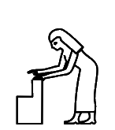
13745
|
U+13745 kEH_Desc Woman, standing, bend forward arms extended forward, hands towards an rectangular object in front of the feet.
I don't think the object in the glyph can be called simply "rectangular". Perhaps "shaped as capital L mirrored horizontally"? This is assuming the glyph is accurate. Or is the description accurate?
The Database offers some pointers. The one I have been able to locate online is p. 312 of:
https://proyectodjehuty.com/wp-content/uploads/2021/04/50.pdf
where there are two occurrences. The object there is much more like one big rectangle, albeit with another, much smaller rectangle sticking out at the lower-front corner; not at all like the proportions in the current glyph.
|
13747
|
U+13747 kEH_Desc Woman, standing, bend forwards, back horizontal, hair hanging forwards in front of the face, arms extended towards the ground, hands horizontal at the hight of the middle of the shins, handpalms downwards.
The hands in the glyph are not horizontal by any stretch of the imagination. I would leave it at "hand palms downwards", which probably implies what was meant.
Further, the glyph does a particularly poor job of depicting that hair is hanging forward (or I would say: hanging down). For an example, the Database points here (fourth column from the left):
https://www.britishmuseum.org/collection/object/Y_EA10472-5
There is another example of a woman bending down with hair hanging down in the iconography in the upper left corner. In both cases, the hands are not horizontal by any stretch of the imagination.
|
13752
|
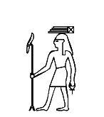
13754
|
U+13752 kEH_Desc God, standing, with long curved beard and long wig, with an elephants tusk (F18) upon his head, right arm forward, holding a sceptre with a straight shaft, a forked base, topped with the head of the Seth animal (S40); left arm hanging beside the body, holding tie or strap, used with sandals (ankh-sign S34) at the loop.
U+13754 kEH_Desc God, standing, with long curved beard and long wig, with a rectangular piece of cloth, with fringes on one of its short sides (S32) upon his head, right arm forward, holding a sceptre with a straight shaft, a forked base, topped with the head of the Seth animal (S40); left arm hanging beside the body, holding tie or strap, used with sandals (ankh-sign S34) at the loop.
For each, the beard is missing from the glyph. For both, the Database refers to p. 26, l. 3 of:
https://www.ifao.egnet.net/uploads/publications/enligne/Temples-Dendara015.pdf
I don't see beards in the transcription either, so I will have to assume the two descriptions are wrong.
|
1376D
|
U+1376D kEH_Desc God, standing, with a long curved beard, wearing the double plume headdress (S72A), right arm forward, hand at the hight of the waist, holding a sceptre with a straight shaft, forked bottom and head of the Seth animal (S40) of the same size as the god, vertically, left arm hanging beside the body.
The description does not mention the line coming from the back of the crown in the glyph. Is it real at all?
|
1377B
|
U+1377B kEH_Desc Goddess, standing, with the head of a jackal, right arm forward, hand at the hight of the waist, holding a sceptre with a straight shaft, forked bottom and head of the Seth animal (S40) of the same size as the goddess, vertically, left arm hanging beside the body.
The description does not mention the ankh sign. Is it real at all?
|
13795
|
U+13795 kEH_Desc God, seated, knees up, with covered legs and arms, with a long curved beard, with a feather (H6) on his head, holding a feather (H6), vertically.
The Database has "If added, it should be redrawn without uraeus and headband." The uraeus has been removed in Unicode 17. But the band around the head with the loop at the back is still in the draft code charts; it will need to be removed as well.
|
137C6
|
137C7
|
U+137C6 kEH_Desc God, seated on a block throne, with the head of a falcon, with the sun rising over a sand covered mountain over the edge of the cultivated areas (N27) on its head , right arm forward, holding a sceptre with a straight shaft, a forked base, topped with the head of the Seth animal (wAs, S40) of the lenght of the god, left arm forward, hand on the knee.
U+137C7 kEH_Desc God, seated on a block throne on a base, with the head of a falcon, wearing the double crown (S5), right arm forward, holding a sceptre with a straight shaft, a forked base, topped with the head of the Seth animal (wAs, S40) of the lenght of the god, left arm forward, hand on the knee.
The description of U+137C6 does not say the block throne is on a base, unlike the description of U+137C7. Is the description of U+137C6 wrong in the omission of the base, or is the glyph wrong?
The Database mentions existence of a token with base.
|
137C8
|
U+137C8 kEH_Desc God, seated on a block throne on a base, with the head of a falcon, wearing the double crown (S5), right arm forward, hand a the hight of the face, holding a tie or strap, used with sandals (ankh-sign, S34) horizontally at the base, left arm forward, hand at the knee, holding a tie or strap, used with sandals (ankh-sign, S34) horizontally at the loop.
Correct "hand a" to "hand at".
|
137D0
|
U+137D0 kEH_Desc God, standing, with the head of a falcon, with a headdress consisting of two plumes and a sun disk (S63A/S70) and an uraeus at the front on its head, right arm forward, hand at the hight of the waist, holding a sceptre with a straight shaft, forked bottom and head of the Seth animal (S40) of the same size as the god, vertically, left arm hanging beside the body.
The description does not mention the ankh sign. Is it real at all?
|
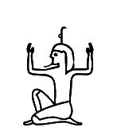
137E9
|
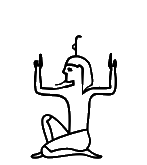
137EA
|
U+137E9 kEH_Desc God, seated, right knee raised, with long curved beard and long wig, with a palm branch, stripped of leaves and notched on his head (M4), notch forward, raised arms at either side of the body, hands held vertically, with the handpalms inwards.
U+137EA kEH_Desc God, seated, right knee raised, with long curved beard and coif, with a palm branch, stripped of leaves and notched on his head (M4), notch forward, raised arms at either side of the body, hands held vertically, with the handpalms outwards.
The hair in the glyph of U+137EA has been corrected to a "coif" in Unicode 17.
|
137F3
|
U+137F3 kEH_Desc Man/god, seated on heel, right knee raised, with coif/short hair, without beard, with a palm branch, stripped of leaves and notched on his head (M4), notch forward, arms extended at either side of the body, holding a palm branch, stripped of leaved with multiple notches (M4A), with the notches outwards, on top of frogs, looking inwards; on top of a basket (V30).
Correct "stripped of leaved" to "stripped of leaves".
|
137F5
|
137F6
|
137F7
|
U+137F5 kEH_Desc Man/god, seated on heel, right knee raised, with coif/short hair, without beard, with a palm branch, stripped of leaves and notched on his head (M4), notch forward, arms extended at either side of the body, holding a palm branch, stripped of leaves, curving inwards at the top, connecting at the top of the M4 sign on the head.
U+137F6 kEH_Desc Man/god, seated, right knee raised, with coif/short hair, without beard, arms extended at either side of the body, holding a palm branch, stripped of leaves, curving inwards at the top, connecting to the top of the head.
U+137F7 kEH_Desc Man/god, seated on heel, right knee raised, with coif/short hair, without beard, with a sun disk (N5) on his head, raised arms at either side of the body, hands held vertically, with the handpalms inwards.
The hair in the glyphs of U+137F5 and U+137F6 have been corrected to "coif/short hair" in Unicode 17, to make them more like the "coif/short hair" in U+137F7. For U+137F5, the Database points to p. 353, l. 10 and pl. 226, col. 84 of:
https://www.ifao.egnet.net/uploads/publications/enligne/Temples-Dendara010.pdf
The hair in the transcription is exactly like the glyph above. It appears very unlikely however that the hairstyle could be determined from the photo or even the original. It becomes an exercise in futility if we expect Unicode to encode palaeographic features that may not even be real, and/or that scholars disagree on (the Database has in the same entry: "I do not agree with the long wig").
|
13784
|
1378B
|
U+13784 kEH_Desc God, seated, right knee raised, with the head of a jackal, right arm forward, forearm horizontal, hand in front of the chest, left arm raised, forearm vertical, holding a stick which extends over the head.
U+1378B kEH_Desc God, seated, both knees up, foot flat on the ground, with the head of a jackal, both arms raised at either side of the body, forearms vertical, handpalms inwards.
Name clash in Unicode 17: both have kEH_UniK that is C022Q.
|
13802
|
13803
|
U+13802 kEH_Desc Man/god, seated, right knee up, with long hair, without beard, with a sun disk with an uraeus at either side (N6B) on his head, arms extended at either side of the body, holding a palm branch, stripped of leaves, curving inwards; on top of a basket (V30).
U+13803 kEH_Desc Man/god, seated, right knee up, with long hair, without beard, with a sun disk with an uraeus at either side (N6B) on his head, arms extended at either side of the body, holding a palm branch, stripped of leaves, curving inwards.
The hair in the glyph of U+13803 has been "corrected" to "long" in Unicode 17 to make it more like the long hair in U+13802. For U+13803, the Database points to p. 159, l. 11 of:
https://www.ifao.egnet.net/uploads/publications/enligne/Temples-Esna007.pdf
The hair in the transcription looks exactly like the glyph above. It may well be that the glyph was correct after all and the description was wrong.
All of this would have been avoided had the descriptions not been this absurdly specific.
|
1380B
|
13815
|
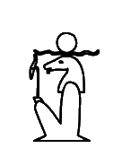
13813
|
U+1380B kEH_Desc God, seated, knees up, with covered legs and arms, with the head of a ram, with forward curling horns.
U+13815 kEH_Desc God, seated, knees up, with covered legs and arms, with the head of a ram, with forward curling horns, with a sun disk (N5) on its head, holding a sceptre with a straight shaft, topped with the head of the Seth animal vertically.
U+13813 kEH_Desc God, seated, knees up, with covered legs and arms, with the head of a ram with horizontal twisted horns, holding a sceptre with a straight shaft, topped with the head of the Seth animal vertically.
There are no (forward curling) horns in the glyphs of U+1380B and U+13815.
For both, the Database has "rather hard to see [...] hence it could be called without horns". If the horns are there, but are just hard to see, I would normalize the glyph to have them anyway. But now the problem is that U+13815 and U+13813 become the same sign apart from the exact shape of the horns, which strays well into the domain of palaeography.
|
13813
|
1380D
|
U+13813 kEH_Desc God, seated, knees up, with covered legs and arms, with the head of a ram with horizontal twisted horns, holding a sceptre with a straight shaft, topped with the head of the Seth animal vertically.
U+1380D kEH_Desc God, seated, knees up, with covered legs and arms, with the head of a ram with horizontal twisted horns, with the head of a cobra in the middle of the horns, holding a sceptre with a straight shaft, topped with the head of the Seth animal vertically.
The description of U+13813 does not mention the sun disk. The Database has "is a bit small for a sun-disk", further suggesting it might be a cobra. But there is a code point U+1380D specifically for the sign with cobra. So if U+13813 has a right to exist at all, then it should be with the interpretation of the object on the horns as sun disk. If some day that turns out to be an error and the sign with sun disk never actually existed, then too bad.
In any case, there should be no inconsistency between description and glyph as this makes the job of font designers impossible.
|
13817
|
U+13817 kEH_Desc God, seated on a block throne on a base, with the head of a ram with horizontal twisted horns, in front of a potters wheel with a lump of clay on it, right leg forward, with the foot at the base of the potters wheel, right arm forward, hand on top of the lump of clay, left arm forward, hand at the potters wheel.
The description in the Unicode 17 version is inconsistent as to whether there is a lump of clay or a vessel: it has both "with a lump of clay on it" and "hands at the vessel".
|
13818
|
U+13818 kEH_Desc God, with the head of a ram with horizontal twisted horns, standing at a potters wheel with a round vessel with an upstanding rim (W24) on it, right leg extended, right foot at the base of the potters wheel, both arms extended in front, right hand above the vessel, left hand at the top of the potters wheel.
In the glyph, the left hand is not at the wheel, it is at the vessel. The right foot is not really at the base of the wheel. But who cares! Does the description need to be so precise? It could be simplified like the description of U+13817 was simplified recently.
|
13819
|
U+13819 kEH_Desc God, with the head of a ram with horizontal twisted horns, with a sun disk (N5) on its head, seated on nothing, in front of a potters wheel with a lump of clay on it, right leg extended, right foot at the base of the potters wheel, both arms extended in front, right hand above the lump of clay, left hand at the top of the potters whieel.
Again, in the glyph, the left hand is not at the top of the potter's wheel, it is at the side of the lump of clay. And again, who cares! The description could be simplified.

1381A
|
U+1381A kEH_Desc God, standing, with the head of a ram with forwards curving horns, both arms raised in front, touching a vertically written wall with battlements near the top, left leg raised, touching the wall near the bottom.
Unicode 17 made the glyph consistent with the description by letting the god touch the wall.
But an unresolved issue is that there are no (forward curving) horns in the glyph. The Database has "Requires another redraw, withouth the horizontal horns". Why was the glyph redrawn without the horns if the description has "with [...] horns"? As above, if the horns were once supposedly there, but are just not easily visible anymore, then I would draw them anyway.
|
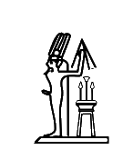
1381E
|
U+1381E kEH_Desc An ithyphallic god, with long, curved beard, standing on a platform, wearing a double plume headdress, with a line coming from the back of the head, running down to the base, arm raised in back, with a flagellum (S45) written over the arm, in front of an altar/table with two conical shapes (tree or bread) and a flower (M16A?).
If the two conical shapes are trees or loafs of bread, then they appear to be on two sticks. Can that be right?
|
13829
|
U+13829 kEH_Desc God, standing, with a long curved beard and long wig/hair, with a clump of three papyrus flowers, with two buds bent down (M15) on its head, both arms forward, hands at the hight of the waist, holding a tray or reed mat, with two tall waterpots (W14) on it.
There is no beard in the glyph. The description in the draft Unicode 17 version was changed to start with "God with breast [...]"; the glyph doesn't clearly show a breast, but it may be a matter of plausible deniability and I care about that less. The Database points to p. 68, l. 12 and plate 67 of:
https://www.ifao.egnet.net/uploads/publications/enligne/Temples-Dendara011.pdf
The transcription has no beard or breast. It would be very hard to recognize these in the photo even if they once existed.
|
1382A
|
U+1382A kEH_Desc God, standing, with a long curved beard and long wig/hair, with a clump of three papyrus flowers, with two buds bent down (M15) on its head, both arms forward, hands at the hight of the waist, holding a tray or reed mat, with two tall waterpots (W14) on it, with a lotus flower and stem (M9/rotated M133) written over the water pot, with the stem of the flower extending beyond the mat, with a sceptre with a straight shaft, a forked base, topped with the head of the Seth animal (S40) between the two pots, with the lower half of the sceptre extending below the mat.
The Unicode 17 glyph has been made more like the description by replacing the M16 shape on the head by M15. But there is no beard in the glyph. The description in Unicode 17 was changed to start with "God with breast [...]"; the glyph doesn't clearly show a breast, but it may be a matter of plausible deniability and I care about that less.
It is not clear in the glyph that the lines below the mat connect to the flowers, rather than to the waterpots. But one often sees that the lines above and below the mat do not connect. See for example pl. CCCVI of:
https://www.ifao.egnet.net/uploads/publications/enligne/Temples-Dendara004.pdf
|
13794
|
136AE
|
U+13794 kEH_Desc God, seated, knees up, with covered legs and arms, with a long curved beard, with a feather (H6) on his head, holding a sceptre with a straight shaft, topped with the head of the Seth animal vertically.
U+136AE kEH_Desc God (Shu) seated, both knees up, with covered legs and arms, with a long, curved beard, with a feather (H6) on the head, holding a sceptre with a straight shaft, topped with the head of the Seth animal vertically.
These two are duplicates. This has been solved in Unicode 17 by making U+136AE non-core.
|
13835
|
13836
|
U+13835 kEH_Desc God, seated on a block throne on a base, with a long curved beard, wearing the Atef crown without rams horns (S8A), both arms in front of the chest, right hand holding a crook (S38), opening inward, angled over the right shoulder, left hand holding a flagellum (S45), angled over the left shoulder; on top of a base.
U+13836 kEH_Desc God, seated on a block throne on a base, with a long curved beard, wearing the Atef crown with rams horns (S8), both arms in front of the chest, right hand holding a crook (S38), opening inward, angled over the right shoulder, left hand holding a flagellum (S45), angled over the left shoulder; on top of a base.
In both cases, the final "on top of a base" repeats earlier information and should be removed.
|
13860
|
13861
|
U+13860 kEH_Desc God, seated, both knees down, with a long curved beard and long hair/wig, wearing a headdress consisting of two feathers and a sun disk on rams horns, with a uraeus with a sun disk on the head at either side of the feathers; both arms forward, holding a flagellum (S45) and a crook (S38), opening inwards.
U+13861 kEH_Desc God, seated, both knees down, with a long curved beard and long hair/wig, wearing a headdress consisting of two feathers on rams horns (S77), both arms forward, holding a flagellum (S45) and a crook (S38), opening inwards.
The hair in the glyph of U+13860 is not long (like it is in U+13861). This has been corrected in Unicode 17.
|
13865
|
U+13865 kEH_Desc God, seated, with knees up, feet flat on the ground, with the head of an ibis, arm forward, forearm following the angle of the upper leg, hand on the knee, horizontally, handpalm up, supporting a human face (D2).
No arm is visible in the glyph. My suggestion is to replace "arm forward, forearm following the angle of the upper leg, hand on the knee, horizontally, handpalm up, supporting" by simply "holding". Overly precise descriptions tend to be inconsistent with the glyphs in the code charts. And anyway, who cares. The character identity could be captured by as little as "Seated ibis-headed god holding face".
The Database mentions existence of one very detailed token where the arm is visible and argues that this should be made visible in the glyph. But please realise that a character set is a list of types, not a list of tokens. A character is an abstraction of instances, not a facsimile of the most detailed instance of a character that one can find.
|
1386A
|
U+1386A kEH_Desc God, seated, knees up, with covered legs and arms, with the head of an ibis, wearing the Atef crown with ram's horns, without sun disk, holding holding a sceptre with a straight shaft, topped with the head of the Seth animal vertically.
The glyph does suggest a sun disk (in the middle above the horns). This has been confirmed to be an error. In Unicode 17 one of the circles on the crown will be removed, but it is regrettably the wrong circle; the circle on top of the crown should remain.
|
13872
|
U+13872 kEH_Desc An oval of sand, with two human heads on top, at either end, facing outwards.
Should there be beards in the glyph if they are not mentioned in the description?
|
13876
|
1387F
|
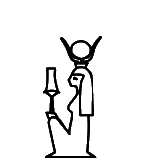
13881
|
138BA
|
138BB
|
U+13876 kEH_Desc Goddess, seated, knees up, with covered legs and arms, wearing a headdress of outwards waving plumes, holding a holding a stem of papyrus with a bud (M131) or flower vertically.
U+1387F kEH_Desc Goddess, seated, knees up, with covered legs and arms, with a headdress of bovine horns with a sun disk (F102), holding a holding a stem of papyrus with a bud (M131) or flower vertically.
U+13881 kEH_Desc Goddess, seated, knees up, with covered legs and arms, with a headdress of bovine horns with a sun disk (F102), holding a holding a sceptre (S42), vertically.
U+138BA kEH_Desc Goddess, seated, knees up, with covered legs and arms, with the head of a lion/lioness, with N6 (The sun, encircled by a cobra (Naja haja), standing up, with expanded hood (Uraeus)) on her head, holding a holding a stem of papyrus with a bud (M131) or flower vertically.
U+138BB kEH_Desc Goddess, seated, knees up, with covered legs and arms, with the head of a lion/lioness, with a sun disk (N5) on her head, holding a holding a stem of papyrus with a bud (M131) or flower vertically.
Correct "holding a holding" to "holding". Do global search-and-replace as there are many more occurrences.
|
13892
|
U+13892 kEH_Desc Goddess, standing, with a headdress of bovine horns with a sun disk (F102), right arm forward, hand at the hight of the waist, holding a crook (S38) of the size of the king vertically, opening outwards, left arm hanging beside the body.
Correct "size of the king" to "size of the goddess".
|
13897
|
13899
|
U+13897 kEH_Desc Goddess, seated on a block throne with a base, wearing a headdress of bovine horns with a sun disk (F102), with a seat (Q1) on the sun disk, right arm forward, hand at the hight of the shoulder, holding a tie or strap, used with sandals (ankh-sign, S34), horizontally at the base, left arm forward, hand upon the knee, holding a tie or strap, used with sandals (ankh-sign, S34), at the loop.
U+13899 kEH_Desc Goddess, seated on a block throne with a base, wearing a headdress of bovine horns with a sun disk (F102), with a seat (Q1) on the sun disk, right arm forward, hand at the hight of the waist, holding a stem of papyrus with a bud (M131) or flower, of the length of the seated figure, vertically, left arm forward, hand upon the knee, holding a tie or strap, used with sandals (ankh-sign, S34), at the loop.
For both, I think I also see the outlines of a vulture headdress in the glyph. Is that real?
|
1389F
|
U+1389F kEH_Desc Goddess, seated, knees up, with covered legs and arms, with a seat (Q1) on her head, holding a holding a tie or strap, used with sandals (ankh-sign, S34), angling forward.
The ankh sign is not angling forward in the glyph. Not sure anyone should care, but description and glyph should be consistent.
|
138E3
|
138E4
|
138E8
|
U+138E3 kEH_Desc Goddess, seated on a block throne on a base, wearing the double crown (S5) and vulture headdress, right arm forward, hand at the hight of the waist, holding a sceptre with a straight shaft, forked bottom and head of the Seth animal (S40), which has a horizontal tie or strap, used with sandals (ankh-sign, S34) at the head of the sceptre; left arm forward, hand on knee.
U+138E4 kEH_Desc Goddess, seated on a block throne on a base, wearing the double crown (S5) and vulture headdress, right arm forward, hand at the hight of the waist, holding a stem of papyrus with a bud (M131) or flower, of the hight of the woman, vertically, left arm forward, hand on knee.
U+138E8 kEH_Desc Goddess, seated on a block throne on a base, wearing the red crown (S3), right arm forward, hand at the hight of the waist, holding a sceptre with a straight shaft, forked bottom and head of the Seth animal (S40), left arm forward, hand on knee.
In all three glyphs, the hand on the knee seems to hold an ankh sign as well, not mentioned in the description. For U+138E3 and U+138E4, the Database points to p. 215 of:
https://www.ifao.egnet.net/uploads/publications/enligne/Temples-Dendara015.pdf
For U+138E3 see l. 4, and for U+138E4 see l. 10. The resolution of the PDF is low, but I would be inclined to see an ankh sign in the tokens. For U+138E8, the Database points to p. 227, l. 11 of:
https://www.ifao.egnet.net/uploads/publications/enligne/Temples-Esna007.pdf
This definitely has an ankh sign. The forked bottom mentioned in the description is not visible in the transcription, so this mention should probably be removed.
|
138F8
|
U+138F8 kEH_Desc Goddess, standing, with round vessel with upstanding rim (W24) on her head, right arm forward, hand at the hight of the waist, holding a stem of papyrus with a bud (M131) or flower, of the hight of the woman, vertically, left arm hanging beside the body, holding a tie or strap, used with sandals (ankh-sign, S34), at the loop.
The ankh sign mentioned in the description is not in the glyph. The Database points to p. 12 of:
https://archive.org/details/MMAF23/page/n15/mode/2up
This does seem to confirm existence of the ankh sign.
|
138F9
|
138F8
|
U+138F9 kEH_Desc Goddess, standing, with a circle on her head, arms hanging beside either side of the body.
U+138F8 kEH_Desc Goddess, standing, with round vessel with upstanding rim (W24) on her head, right arm forward, hand at the hight of the waist, holding a stem of papyrus with a bud (M131) or flower, of the hight of the woman, vertically, left arm hanging beside the body, holding a tie or strap, used with sandals (ankh-sign, S34), at the loop.
The "circle" in U+138F9 looks perfectly identical to the "round vessel" from U+138F8. If it is really just a circle (representing the sun?) and not a round vessel, then make sure it is perfectly round in the glyph. Of if an educated guess can be made that it probably was a "round vessel", then amend the description.
|
13903
|
U+13903 kEH_Desc Goddess, standing, with a flower enclosed by two horns (R20) on her head, right arm forward, hand at the hight of the waist, holding a club, angled forward, with the head of the club on top a vertical stick held by the left hand.
Left and right need to be reversed in the description. The token pointed to by the Database confirms this, on p. 355 of:
https://archive.org/details/ASAE-40-1-1940/page/n181/mode/2up
Had the description been less specific, the inconsistency would not have occurred. Consider for example "[...] one hand holding [...] and the other hand holding [...]".
|
13904
|
U+13904 kEH_Desc Goddess, standing, with a flower enclosed by two horns (R20) on her head, right arm forward, hand at the hight of the waist, holding a club, angled forward, with the head of the club on top a vertical stick held by the left hand, facing a god, standing, with a long curved beard, wearing the Atef crown with horns, right arm forward, hand at the hight of the waist, holding a club, angled forward, with the head of the club on top a vertical stick held by the left hand, both sticks within an oval of rope.
For the god, left and right are reversed. The Database points to p. 186 and plate 175 of:
https://www.ifao.egnet.net/uploads/publications/enligne/Temples-Dendara012.pdf
Both photo and transcription seem to confirm the glyph and contradict the description. Of course, if the description had been less overly specific, then the inconsistency would not have arisen.
|
1391D
|
U+1391D kEH_Desc Goddess, standing, with a palm branch, stripped of leaves and notched on her head (M4), notch forward, right arm forward, hand at the hight of the waist, holding a stem of papyrus with a bud (M131) or flower, of the hight of the woman, vertically, left arm hanging beside the body.
The glyph seems to have several "notches" on the palm branch, yet "notch forward" suggests there is precisely one. The Database points to p. 351 of:
https://archive.org/details/ASAE-40-1-1940/page/n179/mode/2up
This does look like the glyph, and there is no single clear notch. The issue would be solved by a description that is less specific. Perhaps write instead "with M4 on her head".
|
1392B
|
1392C
|
U+1392B kEH_Desc Goddesss, seated on a block throne, wearing a headdress consisting of the double crown on horns with a feather in the front, right arm forward, hand at the hight of the waist, holding a stem of papyrus with a bud (M131) or flower, of the length of the seated figure, vertically, left arm forward, hand upon the knee; facing a god, seated on a block throne, with the head of a falcon, with N6 (The sun, encircled by a cobra (Naja haja), standing up, with expanded hood (Uraeus)) on his head, right arm forward, hand at the hight of the waist, holding a sceptre with a straight shaft, forked bottom and head of the Seth animal (S40), of the length of the seated figure, vertically, left arm forward, hand upon the knee; both on top of a base.
U+1392C kEH_Desc Goddesss, seated on a block throne, wearing a headdress consisting of the double crown on horns, right arm forward, hand at the hight of the waist, holding a stem of papyrus with a bud (M131) or flower, of the length of the seated figure, vertically, left arm forward, hand upon the knee; facing a god, seated on a block throne, with the head of a falcon, wearing the double crown (S5), right arm forward, hand at the hight of the waist, holding a sceptre with a straight shaft, forked bottom and head of the Seth animal (S40), of the length of the seated figure, vertically, left arm forward, hand upon the knee; both on top of a base.
For both signs, I think goddess and god are both holding ankh signs in the glyphs; are those real? I also think the goddess has the vulture headdress; is that real?
|
1393F
|
U+1393F kEH_Desc The head of a human male in profile, with a sidelock, with two arms, one raised in front, hand to mouth, other arm hanging downwards, handpalm facing outwards.
The glyph has the handpalm inward. This has been corrected in Unicode 17.
|
13955
|
U+13955 kEH_Desc The head of a human male in profile, with a long curved beard an coif, one arm forward, hand at the hight of the shoulder, holding a sceptre with a straight shaft, forked bottom and head of the Seth animal (S40), other arm hanging downwards.
Correct "an coif" to "and coif". Is the ankh sign in the glyph real?
|
13956
|
U+13956 kEH_Desc The head of a human male in profile, with two arms, one arm forward, hand to mouth, with a dotted line coming from the mouth, angling downwards, other arm hanging downwards, handpalm outwards.
In the glyph, the hand palm is inward.
|
1396B
|
U+1396B kEH_Desc A lock of hair with three strands, with curly endings (D3A), with a knife with a triangular blade and straight handle (T30A) written over the rightmost strand.
If the knife is *over* the strand, then let the knife occlude view of part of the strand to avoid inconsistency between description and glyph.
|
1396D
|
13970
|
U+1396D kEH_Desc A lock of hair, resembling a half circle, with three strands of hair with a curly ending, starting in the middle, to the back.
U+13970 kEH_Desc A lock of hair, resembling a half circle, with three strands of hair with a curly ending, one left, one middle, one right.
Is it plausible that these are truly distinct signs, in the sense that if the strands are one pixel further to the left or to the right, then the function changes? Do these really need to be distinguished in Unicode? The Database does not reflect on this at all.
|
13982
|
U+13982 kEH_Desc An eye, with a wavy line of eye-paint above the eye, inside an oval.
I'm not sure that the line of eye-paint in the glyph can be called "wavy". Nor am I sure anyone should care, apart from hard-core palaeographers. Omit "wavy" from the description?
|
13989
|
1398A
|
1398B
|
U+13989 kEH_Desc An eye with three vertical lines of overlapping triangles coming from the bottom.
U+1398A kEH_Desc An eye with a line of eye paint above the eye, with three vertical lines of overlapping triangles coming from the bottom.
U+1398B kEH_Desc An eye, with a rippled line of eye-paint above the eye, with three vertical lines of overlapping triangles coming from the bottom.
In Unicode 17, the V-shaped patterns in U+1398A and U+1398B have been corrected to be triangles like in U+13989, consistent with the descriptions.
|
139B2
|
U+139B2 kEH_Desc Two arms, elbows bent, upper arms overlapping, forearms separated, lower forearm nearly horizontal, holding an oar which tapers out towards the bottom.
Does it taper out towards the top as well? The glyph suggests it mainly tapers out towards the top in fact. Not sure we should care about the exact shape. The main issue is that the shape is an oar, or more precisely, the blade of an oar (I think).
|
139BA
|
U+139BA kEH_Desc Two arms, connected at the shoulders, one arm forwards, with a horizontal forearm, holding a shield as seen in profile, top curving inwards, other arm downwards, forearm vertical, holding a mace with a pear-shaped head, with a round blade attached to the mace-head (T3C), horizontally, blade upwards.
I'm not sure how to interpret "blade upwards". My first hunch would be to interpret it differently from the glyph, namely having the blade on top. Why not omit "blade upwards" to avoid the issue?
The Database has a tiny photo, which I interpret more like the description than like the glyph.
|
139C3
|
139C9
|
139CA
|
U+139C3 kEH_Desc A forearm, with the palm of the hand facing upwards, and the upper arm represented by a loop.
U+139C9 kEH_Desc A forearm, with the palm of the hand downwards, with the upper arm represented by a loop, which is angled forwards.
U+139CA kEH_Desc A forearm, with the hand held like a fist, and the upper arm represented by a loop.
For all three glyphs, I'm not sure how to see a "loop" in the shapes. Are the glyphs accurate? For U+139C9 I'm also not sure how to interpret "angled forwards"; to me it looks like the other two (but the angle is probably a palaeographic detail that deserves to be ignored anyway).
For U+139C3, the Database has a pointer to p. 187, pl. 11, second line of register of:
At least that seems to be consistent with the glyph.

130AB (5.2)
|
139FE
|
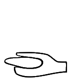
139FF
|
U+130AB kEH_Desc A human hand, holding an oval.
U+139FE kEH_Desc A human hand with the thumb upwards and the palm curved upwards (D47), holding an egg (H8).
U+139FF kEH_Desc A human hand, holding an oval, with the fingers and the thumb being the same length.
Treating U+139FE and U+139FF as distinct from U+130AB strays well into the realm of palaeography, which is normally considered to be outside the scope of Unicode. The Database mentions for both U+139FE and U+139FF "Exists, but would already be covered by [...] U+130AB", but offers no further justification why these two became core signs nonetheless.
For U+139FF in particular, it seems hard to defend the length of the thumb as a reason to introduce a new code point. For U+139FE, I don't really consider the thumb to be "upward" any more than in U+130AB; one slightly more obvious graphical difference is that the egg is held at an angle in U+139FE, but the description does not mention the angle of the egg as significant. It would be hard to argue moreover that the hieroglyphic depiction of an "egg" and an "oval" are distinct. Functionally, the signs are equivalent.
|
13A01
|
13A02
|
U+13A01 kEH_Desc A human hand, held as a fist, with the thumb on top (D49), holding a vertical stick.
U+13A02 kEH_Desc A human hand, held as a fist, with the thumb on top (D49), holding a short vertical stick, which barely extends beyond the hand.
Again, it would be hard to argue that the distinction between these two is anything other than palaeographic.
|
13A13
|
U+13A13 kEH_Desc Legs in a walking posture, rotated 90° forward, feet towards the bottom.
In the glyph, the angle is not exactly 90°. In Unicode 17, the description has been adjusted to have "roughly 90°".
|
13A20
|
U+13A20 kEH_Desc A fire-drill in a piece of wood (U28), written on top of a human foot and lower leg (D58).
The glyph may be misunderstood as an overlay of "hills" N26 and "leg" D58. In Unicode 17, the glyph has been drawn differently to bring out U28 more clearly.
|
13A2A
|
U+13A2A kEH_Desc A stylised set of two toes, resembling a harpoon-head with two horizontal strokes and a single curl on top of the point (HG T19), on top of base resembling a standard used for the carrying of religious symbols with the vertical stick at the far side (R92A).
In the glyph, the vertical part of the standard looks like a leg of an animal, and there appears to be a loop at the right. Both were confirmed to be errors. In Unicode 17, the glyph has been corrected to have (more or less) a plain standard with a diagonal beam. What looks strange to me though is that the vertical beam of the standard is curved.
|
13A5C
|
U+13A5C kEH_Desc A basket with four pieces of grain or fruit (M39) in front of an oryx, standing (E28), on top of a standard used for the carrying of religious symbols with the vertical stick at the far side (R92A).
The loop around the neck in the glyph is an error. In Unicode 17, this has been removed. The description has "four pieces" while the glyph has three. A clear case of an overly specific description leading to avoidable problems. I suggesting omitting (at least) "four pieces of" in the description; "a basket with grain or fruit" is specific enough.
|
13A66
|
U+13A66 kEH_Desc A gazelle, with two horns visible, about to rear.
Only one horn is visible in the glyph. But who cares! How many horns are visible should not matter for the purposes of Unicode.
|
13A6E
|
U+13A6E kEH_Desc A ram (Ovis longipes palaeo-aegyptiacus), standing, without a beard, with a cobra (Naja haja), standing up, with expanded hood (Uraeus)(I64) on its head, with the wings of a bird on its back, spread in a v-shape.
There is a beard in the glyph. But who cares whether there is a beard. This should not matter for the purposes of Unicode.
|
13A6C
|
13A6D
|
U+13A6C kEH_Desc A ram (Ovis longipes palaeo-aegyptiacus), standing, with a beard, with the white crown (S1) on its horns.
U+13A6D kEH_Desc A ram (Ovis longipes palaeo-aegyptiacus), standing, with a beard, with the red crown (S3) on its horns.
There is no beard in the two glyphs. But who cares whether there is a beard. This should not matter for the purposes of Unicode.
|
13A74
|
U+13A74 kEH_Desc A ram (Ovis longipes palaeo-aegyptiacus), standing, with a beard, with a headdress consisting of two feathers and a sun-disk (S76) on top of the horns, with a flagellum (S45) on its back; in front of a A ram (Ovis longipes palaeo-aegyptiacus), standing, with a beard, with a flagellum (S45) on its back; on top of a standard used for carrying religious symbols (R12).
No beards are discernable. But who cares! In any case, make sure there are no inconsistencies between descriptions and glyphs. Not mentioning the beards would be one way to achieve that.
|
13A81
|
U+13A81 kEH_Desc A flowering sedge (M23A), written ovar a jackal, standing, tail down (E17); on top of a standard used for carrying religious symbols (R12).
The glyph depicts the jackal over the sedge, not the sedge over the jackal. The glyph has been corrected in Unicode 17.
|
13A9F
|
13AA0
|
13AA1
|
U+13A9F kEH_Desc A cat, seated, tail curled over the body towards the back, right paw raised in front, holding a round loaf with four curved imprints (X6B).
U+13AA0 kEH_Desc A cat, seated, tail curled over the body towards the back, right paw raised in front, holding an oval vertically.
U+13AA1 kEH_Desc A cat, seated, tail curled over the body towards the back, right paw raised in front, holding a roll of bread, with oval lines within it (X4A) vertically.
In all three glyphs, the *left* paw is raised. The glyphs has been corrected in Unicode 17.
|
13AA5
|
U+13AA5 kEH_Desc A horse, standing, right front leg raised.
In the glyph, it is the left front leg that is raised. But who cares! Changing the description to "one front leg raised" would solve the issue.
|
13AAE
|
13AAF
|
U+13AAE kEH_Desc A griffin with the head of a jackal.
U+13AAF kEH_Desc A griffin.
I don't think that the glyph of 13AAE has the head of a jackal. The beak looks more like a falcon (although there are ears). Conversely, 13AAF doesn't look like it has the head of a falcon, and I think normally a griffin has the head of a falcon. Are the descriptions reversed?
The glyph of U+13AAE does correspond to JSesh E80A and the glyph of U+13AAF does correspond to JSesh E80, so in this respect, UniKemet appears to be accurate.
|
13AB4
|
U+13AB4 kEH_Desc A hippopotamus (Hippopotamus amphibius), with a knife with a triangular blade and straight handle (T30A) on its head, blade towards the back.
The blade in the glyph is toward the front. The glyph has been "corrected" in Unicode 17. However, the Database refers to p. 22, l. 11 of:
https://www.ifao.egnet.net/uploads/publications/enligne/MMAF024.pdf
where the blade is toward the front. So perhaps it was the description that was wrong after all. The Database further refers to pl. DCXXXII of:
https://www.ifao.egnet.net/uploads/publications/enligne/MMAF031.pdf
But I cannot make out the orientation there. For the purposes of Unicode, encoding the orientation of knives is nonsense anyway, and the philologists apparently cannot tell us with certainty which is which, so at this point I no longer care.
|
13ACC
|
13AD8
|
13AE3
|
13B05
|
U+13ACC kEH_Desc A lion, standing, tail downwards, right front leg raised, holding a knife with a triangular blade and straight handle (T30A).
U+13AD8 kEH_Desc A lion, lying down, tail curled over the body towards the back, with a knife with a triangular blade and straight handle (T30A) on the front paw.
U+13AE3 kEH_Desc A lion, standing on its hind legs, foreleg extended forwards, holding a a knife with a triangular blade and straight handle (T30A).
U+13B05 kEH_Desc A baboon, standing on its hind legs, tail down, arms extended forwards, holding a knife with a triangular blade and straight handle (T30A), blade facing outwards.
In all four glyphs, the blade is not triangular but rounded. But who cares what the shape of the blade is. I would simply omit "triangular", thereby removing the inconsistencies between descriptions and glyphs.
|
13AE9
|
U+13AE9 kEH_Desc A hamadryas baboon (Papio hamadryas), seated, hands on knees, tail folded under the rear, with a feather (H6) on its knee, angled forwards.
In the glyph, the tail is not folded under the rear. The glyph has been corrected in Unicode 17.

13B0C
|
U+13B0C kEH_Desc Two baboon, standing on its hind legs, tail down, facing each other, arms extended forwards, left forearm horizontal, holding the same windpipe and heart, with a single horizontal stroke at the top (F35), with the right arm angled upwards with the hand near the tops stroke.
For the left baboon, the left/right arms are reversed in the glyph. You could solve this simply by making the description less specific, say "one arm [...] holding [...] and another arm [...]".
There is a low-resolution photo in the Database, but it is hard to distinguish the left and right arms of the baboon on the left.
|
13B12
|
U+13B12 kEH_Desc A baboon, dancing, right leg vertical, left leg raised, left knee in front of the right leg, left foot behind the right leg, right arm extended forwards and downwards, holding an ornamental chevaux de frise on top of walls, with a circle dividing the top and base (Aa30), of nearly the size of the baboon near the base of the ornament.
I think I understand what is meant (something in the vein of "the kind of chevaux de frise that typically occurs on top of a wall"), but there are no walls in the glyphs. I would just omit "on top of walls".
|
13B0E
|
U+13B0E kEH_Desc A baboon, standing on its hind legs, tail down, arms extended forwards, forearm horizontal, hand horizontal, handpalm upwards, holding a windpipe and heart, with a single horizontal stroke at the top (F35).
There are two horizontal strokes in the glyph. The glyph has been corrected to have a single stroke in Unicode 17.
|
13B19
|
U+13B19 kEH_Desc A lion, lying down, with the face of a man, with a long, curved beard and coif, wearing the double crown (S6) and with ureaus on the forehead.
The glyph has a base not mentioned in the description. The existence of the sign with base is confirmed by examples listed in the Database.
|
13B3B
|
U+13B3B kEH_Desc A butchered bovid without head or legs, tail coiling upwards, with a knife with a triangular blade and a straight handle (T30A) angled at the top, blade backwards, and a knife angled at the bottom, blade backwards.
In the glyph, the top knife has the blade forward. The glyph has been "corrected" in Unicode 17. However, after double-checking the link in the Database myself, p. 198, nr. 21 of:
https://www.ifao.egnet.net/uploads/publications/enligne/Temples-Esna007.pdf
I find the glyph was correct after all and the description was wrong. We are made to change glyphs back and forth based on conflicting information, and at this point I've had enough. If it really mattered how many knives there are, where these knives are positioned on the body of the animal, whether the knives are angled forwards or backwards, and on which side the blades are, then we would have been provided with accurate and consistent information from the start. On the level of Unicode, it never made the slightest sense anyway to encode such palaeographic details, and given that after almost a year we've still not converged should convince anyone by now that we cannot continue in this way.
All one needs to specify the identity of this sign is something like "Torso of butchered bovid with knives". Anything more than this serves no reasonable purpose.
|
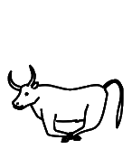
13B39
|
13B58
|
U+13B39 kEH_Desc A bovid (bull), legs bound together, tail downwards.
U+13B58 kEH_Desc A bovid (bull), legs bound together, tail downwards.
To distinguish the two glyphs, the description of U+13B58 in Unicode 17 was amended to have "without horns".
|
13B6A
|
U+13B6A kEH_Desc The head of a bovid (ox) with outwards curving horns, with a short vertical stroke under the chin (beard?).
The glyph has inwards curving horns. As I commented elsewhere for U+130FE, the evidence in the TSL shows that the curvature of horns is highly variable in actual inscriptions, and thereby the description may be overspecific. How about just "with horns"?
|
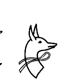
13B79
|
U+13B79 kEH_Desc The head of a jackal, looking backwards, with the neck curving towards the back, written over a band of string or fabric (V12).
"Written over" suggests the jackal occludes view of part of the band. Is it then "band written over jackal"?
|
13B7B
|
U+13B7B kEH_Desc A mace (T3) written horizontally over the neck of a head of a jackal, looking backwards, with the neck curving towards the back, with the macehead towards the back.
In the glyph, it appears the mace head is towards the front (but at the back of the head of the jackal). The Database points to p. 45, l. 3 and pl. 32 of:
https://www.ifao.egnet.net/uploads/publications/enligne/Temples-Dendara011.pdf
The transcription seems to confirm the glyph is wrong, and the mace head is on the right. The photo is less clear. The transcription also seems to suggest the mace is curved, but this is less important, as it may be an idiosyncrasy of the token rather than a feature of the type.
By the way, this example also shows why it never made any sense to treat overlays with "non-compositional" meaning any differently from overlays with "compositional" meaning. With the overlay control, the graphical form would have been determined by the encoder, who could if necessary use the mirroring control or variation selectors for rotation to choose an appropriate orientation of the mace. The Database suggests that there are several variants of this sign, and one probably wouldn't want to introduce code points for all of them.
The term "compositionality" is problematic for Ancient Egyptian anyway. There are many examples where a combination of two signs combined with a simple vertical or horizontal joiner has a meaning that is not a composition of the meanings of the constituent signs. There is no shortage of (non-overlaid) hieroglyphs, and we won't run out of new signs to add anytime soon, so why add more signs than necessary?
|
13B88
|
13B89
|
13B8B
|
U+13B88 kEH_Desc A mouth (D21), written over the neck of the head of an antilope (F81).
U+13B89 kEH_Desc A representation of two ribs, written parallel (Aa15), written over the neck of the head of an antilope (F81).
U+13B8B kEH_Desc A mouth (D21), written over the neck of the head of a bubalis antilope.
In the Database I find:
"overlay, but likely to difficult to render correctly with overlay tools."
Wanting to get the appearance to be "perfect" is generally a pretty bad reason to include composed signs as atomic code points, and if you were to follow the same reasoning consistently you would need to include many dozens if not hundreds of composed signs, not just for overlays but also for insertions. Even for the vertical joiner, one could make the appearance more "perfect" if a hare becomes flatter, which is why Gardiner had E034A (U+130FA) in his font. But E034A was deprecated (made legacy) for good reasons!
HieroJax already has provisions to fine-tune the appearance of overlays, insertions and more. Cf.
https://nederhof.github.io/hierojax/ligaturelist.html
It appears to be an internally inconsistent strategy to deprecate existing composed signs in the basic sign list like U+131A5 for nsw-bjtj (which is actually pretty difficult to get "perfect" if encoded compositionally) while introducing new composed signs in the extended sign list.
For nsw-bjtj see Points 9 and 10 of the Encoding Principles in:
https://www.unicode.org/reports/tr57/tr57-4.html
In particular under Point 10:
"However, exceptions can be made for signs which are widely used"
I would say that if exceptions can be made, then nsw-bjtj is a reasonable candidate for an exception. But U+13B88 and U+13B89 and U+13B8B are not.
Moreover, for U+13B88 and U+13B8B, "written over" suggests the mouth occludes view of part of the antelope. If this is not what is meant then use a different phrase, e.g. "overlaid with". Similarly, for U+13B89, the glyph conversely suggests the antelope is over the ribs.
|
13B91
|
U+13B91 kEH_Desc The forepart of a lion, lying down (F4), wearing a headdress consisting of two feathers on top of the horns of a ram, with a cobra (Naja haja), standing up, with expanded hood (Uraeus), with sun disks its head on either side of the feathers, orientated outwards (S74).
"sun disks" ? I only see one sun disk in the middle. Are the uraei to have sun disks instead? The glyph doesn't have these. Is the sun disk in the middle correct? That is not mentioned in the description.
|
13BB3
|
U+13BB3 kEH_Desc A tongue, with the stroke at the back vertical.
The "vertical" does not appear accurate. In Unicode 17, the UniKemet description has been adjusted to have "pointing upwards".
|
13BB9
|
U+13BB9 kEH_Desc The leg and hoof of a bovid (ox), foreleg nearly horizontal, thigh muscle widened.
It is difficult to recognize what the glyph is meant to depict. In Unicode 17, the glyph has been improved on the basis of a photo of two tokens, but it remains difficult to recognize all the mentioned elements from the description. My suggestion would be to adjust the description to something shorter and less specific like "Stylized bent leg of a bovid".
|
13BDF
|

13125 (5.2)
|
U+13BDF kEH_Desc A windpipe and lungs, with a broad horizontal bar on top.
U+13125 kEH_Desc A windpipe and lungs.
I understand that U+13BDF was introduced as a variant of U+13125 mainly for the use with insertions. This is a terrible idea, for at least three reasons.
First, it assumes that a font cannot detect whether a sign is used with or without an insertion and then automatically select an appropriate glyph for that sign. For HieroJax that is absolutely not the case and I cannot imagine that it is a problem for OpenType either. The task of placing an inserted group in the correct position, and scaling it appropriately, is several orders of magnitude more difficult than simply detecting co-occurrence of two characters.
Second, even if you assume that font technology is incapable of selecting the most appropriate glyph depending on whether or not it is used with insertion, you need a general design, as opposed to arbitrarily introducing extra code points for one or two signs for this purpose. There are many signs, perhaps dozens if not hundreds, that change their appearance depending on whether they are used with or without insertion. Much more common examples are U+1312A and U+1312B and U+13257 but separate code points for those for the purpose of insertions were not introduced.
See how HieroJax handles these, by selecting appropriate glyphs depending on insertion:
https://nederhof.github.io/hierojax/insertionlist.html
Third, once you have introduced minor graphical variations as core independent code points, for the purpose of insertions, then you cannot prevent encoders from using those code points *without* insertions. They can then try to encode minor variations in dimensions, or just arbitrarily pick one or the other code point for the same sign. This helps no one, and is only a nuisance for standardization.
|
13BE1
|
U+13BE1 kEH_Desc A windpipe and lungs (F36), with a wide cup on each side of the lungs, from which two flowers come, one vertical, the other crossing the windpipe, to angle downwards on top of the vertical flower on the other side.
From Unicode 17, the description clarifies that there are two distinct types of buds.
|
13BFB
|
U+13BFB kEH_Desc A piece of meat, angled backwards, tapering of near the top.
Correct "of" to "off"?
|
13C1F
|
U+13C1F kEH_Desc Three ducks or geese, without wings, standing, overlapping each other vertically, rotated 90°
In Unicode 16, the glyph looks like a 45° rotation. Unicode 17 corrected the rotation of the glyph to 90°.
|
13C4B
|
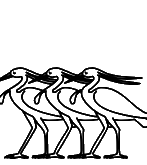
13C4C
|
U+13C4B kEH_Desc Three gray herons (Ardea cinerea), overlapping each other.
U+13C4C kEH_Desc Three gray herons (Ardea cinerea), overlapping each other.
In Unicode 17, the UniKemet description of U+13C4C was clarified to mention the presence of lappets.
|
13C58
|
13C59
|
U+13C58 kEH_Desc A gray heron (Ardea cinerea) with a single straight feather on its head and a lappet.
U+13C59 kEH_Desc A gray heron (Ardea cinerea) with a single feather on its head and a lappet.
In Unicode 17, the description of U+13C59 was corrected to omit "and a lappet". I don't know why the description of U+13C58 still has "straight feather" when the feather in the glyph is not straight. I would simply omit "straight" as insignificant palaeographic detail.
|
13C5A
|
U+13C5A kEH_Desc A gray heron (Ardea cinerea) with two feather on its head.
As herons generally have two feathers, there is not enough information to distinguish this from other heron signs. In Unicode 17, the description was completed to "A gray heron (Ardea cinerea) with a downward curve tip at the beak and two feathers on its head". But please correct "curve" to "curved" or even better "with the tip of the beak curved downward".
|
13C9D
|
13C9F
|
U+13C9D kEH_Desc A falcon (G5), on top of a teardrop sized perch with the point down.
U+13C9F kEH_Desc A falcon (G5), on top of a long upside down cone.
This may be one of the cases where consistency between different fonts will be impossible to achieve and where it will be impossible for encoders to decide which code point to choose. The "teardrop sized perch with the point down" *is* an upside down cone. One shape is marginally thinner and longer than the other, that's all.
The Database writes that the cone in U+13C9D should be drawn to be small "to distinguish it from" U+13C9F. This proves my point. If you need to resort to emphasizing, if not exaggerating, size differences in the normalized font in order to be able to argue that the two shapes are actually different signs to begin with, then you are just inflating the number of code points for the sake of having a lot of code points, or for the sake of creating palaeographically precise facsimiles for individual tokens. The two shapes are functionally equivalent: nb, "lord". I would challenge anyone to look at the photo of the cited token of U+13C9D in:
http://sith.huma-num.fr/karnak/977
and the photo of the cited token of U+13C9F in:
https://thotsignlist.org/mysign?id=3557
and argue that had it not been for the way these two tokens have been transcribed, they would still deem these to be two distinct signs.
|
13CB4
|
13CB6
|
13CB7
|
U+13CB4 kEH_Desc A falcon, with spread wings that angle downwards and spread legs, head looking towards the reading direction, with the sun, encircled by a cobra (Naja haja), standing up, with expanded hood (Uraeus) (N6) on its head; claws on top of cartouches in a round form (V9), with one handed fans (S37) going from the claw over the wing, at an outwards angle, the head of the fan above the wing, fan curving outwards.
U+13CB6 kEH_Desc A falcon, with horizontally spread wings and spread legs, head looking towards the reading direction, with the sun, encircled by a cobra (Naja haja), standing up, with expanded hood (Uraeus) (N6) on its head; claws on top of cartouches in a round form (V9), with one handed fans (S37) going from the claw over the wing, at an outwards angle, the head of the fan above the wing, fan curving outwards; on top of a sand covered mountain over the edge of the cultivated areas (N26).
U+13CB7 kEH_Desc A falcon, with spread wings that angle downwards and spread legs, head looking towards the reading direction, with the sun, encircled by a cobra (Naja haja), standing up, with expanded hood (Uraeus) (N6) on its head; claws on top of cartouches in a round form (V9), with one handed fans (S37) going from the claw over the wing, at an outwards angle, the head of the fan above the wing, fan curving outwards; written inside the sun-disk of the sun rising over a sand covered mountain over the edge of the cultivated areas (N27).
There are no visible cartouches in the glyphs. Copy-and-paste error of description or are the glyphs wrong?
For U+13CB6, the Database points to p. 68, l. 8 of:
https://archive.org/details/MMAF25/page/n45/mode/2up
If there are cartouches, then they are represented as no more than tiny blobs. Also, the token looks closer to U+13CB7 than to U+13CB6, but with smaller sun. For U+13CB7, the Database points to p. 35, l. 10 of:
https://www.ifao.egnet.net/uploads/publications/enligne/Temples-Dendara013.pdf
I don't see cartouches there.
|
13CBA
|
U+13CBA kEH_Desc A falcon, with spread wings that angle downwards, without legs, with one handed fans with the top replaced by a feather, written over the wing, angling outwards.
There are legs in the glyph.
The Database points to p. 65, l. 8 of:
https://www.ifao.egnet.net/uploads/publications/enligne/Temples-Esna007.pdf
There are definitely legs in the transcription. The description seems to be wrong.
|
13CBE
|
U+13CBE kEH_Desc A falcon, seen from the side, one wing forward, horizontal, other wing forward, at a 45° downwards angle, one claw visible below the lower wing.
The "one wing forward" is not remotely "horizontal" in the glyph. If the glyph is accurate, I would just say "wings forward, one slanting up and the other slanting down", avoiding also mention of the exact angle. [I'm not sure the word "slanting" is the most fluent English word one could choose.]
|
13CC1
|
13CC2
|
U+13CC1 kEH_Desc A falcon, legs drawn towards the body, body nearly horizontal (G158), with a flagellum (S45) on its back; on top of a standard used for the carrying of religious symbols with the vertical stick at the far side (R92A).
U+13CC2 kEH_Desc A falcon, legs drawn towards the body, body nearly horizontal (G158), on top of a standard used for the carrying of religious symbols with the vertical stick at the far side (R92A).
The standards in the glyphs look like one half of the 'sky' sign, not R92A.
For U+13CC1, the Database points to p. 282, l. 9 and pl. 166, col. 7 of:
https://www.ifao.egnet.net/uploads/publications/enligne/Temples-Dendara010.pdf
The transcription does seem to suggest that the standard below the falcon looks different from the standards in neighbouring signs. However, in the photo, the standards look very similar.
For U+13CC2, the Database points to p. 372, l. 14 and pl. 234, col. 228 of the same publication. Here the standard below the falcon looks completely as expected, and suggesting one half of the sky sign is unwarranted.
I would suggest redrawing both glyphs with a normal standard.
|
13CDD
|
U+13CDD kEH_Desc A human headed bird (G53A), wearing a headdress consisting of a sun-disk between the horns of a bovid (F102), with a flagellum (S45) on its shoulder.
The standard in the glyph is not mentioned in the description. The Database refers to p. 74, l. 15 of:
https://www.ifao.egnet.net/uploads/publications/enligne/Temples-Dendara014.pdf
This has a standard as in the glyph.

13CD5
|
13CD6
|
13CD9
|

13CDA
|
U+13CD5 kEH_Desc A human headed bird.
U+13CD6 kEH_Desc A human headed bird, with a flagellum (S45) on its shoulder.
U+13CD9 kEH_Desc A human headed bird (G53A), wearing a headdress consisting of two feathers on top of the horns of a ram (S77).
U+13CDA kEH_Desc A human headed bird (G53A), wearing a headdress consisting of two feathers on top of the horns of a ram (S77), with a flagellum (S45) on its shoulder.
None of the descriptions of human-headed birds mention beards. If these are not expected to have beards, or if it doesn't matter, I would suggest omitting them from the glyphs.
The glyph of U+13CDA, unlike U+13CD9, seems to suggest uraei on the headdress. Are those real?

13CE9
|

13CEA
|
13CED
|

13CEE
|
U+13CE9 kEH_Desc Three heads and upper bodies of ducks protruding from a nest without internal detail.
U+13CEA kEH_Desc Three heads and upper bodies of ducks protruding from a nest with netting as internal detail.
U+13CED kEH_Desc Three heads of a pintail duck (Anas acuta) (H1), protruding from an oval pool or nest.
U+13CEE kEH_Desc Three heads of a pintail duck (Anas acuta) (H1), protruding from an oval pool or nest, with internal netting as detail.
These violate Point 5 of the Encoding Principles "Signs that exist with and without inner detailing will be included with the inner detailing".

13150 (5.2)
|

13CFC
|
U+13150 kEH_Desc A griffon vulture (Gyps fulvus).
U+13CFC kEH_Desc A griffon vulture (Gyps fulvus), without internal detail or visible wings, without a lappet.
Introduction of U+13CFC violates Point 5 of the Encoding Principles.

13D10
|

13D11
|
U+13D10 kEH_Desc A staff, with a straight shaft, topped with the head of a falcon, with the sun, encircled by a cobra (Naja haja), standing up, with expanded hood (Uraeus) (N6) on top of the head.
U+13D11 kEH_Desc A staff, with a straight shaft and forked end, topped with the head of a falcon, with the sun, encircled by a cobra (Naja haja), standing up, with expanded hood (Uraeus) (N6) on top of the head.
In the glyph of U+13D11, the cobra does *not* encircle the sun; it is just the I10 cobra. Copy-and-paste error from U+13D10?
|
13D36
|
U+13D36 kEH_Desc A Nile crocodile (Crocodylus niloticus), with a feather (H6), angled forwards, on its head, with an spear, arrow without fletching or a harpoon without handle, written vertically, tip downwards on its back; on top of a standard used for carrying religious symbols, with a short vertical pole, with a loop under the horizontal beam, running over the vertical pole (R56).
In the glyph, the feather is angled backwards, and the spear is angled backwards as well (rather than being vertical). If you want to call the orientation of the spear "vertical", then fine, but then why specify the orientation of the feather? The descriptions are overly precise, which creates avoidable problems for consistency. Another thing is that the glyph does have a "handle" on the arrow/harpoon, contrary to the description.

13D45
|
U+13D45 kEH_Desc A Nile crocodile (Crocodylus niloticus), wearing a headdress consisting of two feathers on top of the horns of a ram, with a cobra (Naja haja), standing up, with expanded hood (Uraeus), with sun disks its head on either side of the feathers, orientated outwards.
It is impossible to make out the sun disks on the cobras in the code charts. What's the point of specifying details that are so small that they are lost with any normal resolution?
(The description is also ungrammatical.)
|
13D64
|

13192 (5.2)
|
U+13D64 kEH_Desc A horned desert viper (Cerastes cerastes) (I9), coming out of an open rectangle, with the top line shorter than the bottom line (I24); on top of legs in a walking posture, feet orientated towards the reading direction (D54).
U+13192 kEH_Desc A horned desert viper (Cerastes cerastes) (I9), coming out of an open rectangle, with the top line shorter than the bottom line.
In the glyph of U+13D64, the top and bottom lines have the same length. The Database points to p. 59 l. 7 of:
https://www.ifao.egnet.net/uploads/publications/enligne/Temples-Esna007.pdf
where the top and bottom lines have the same length. This is a normalized transcription, so this is not necessarily conclusive.
But anyway, who cares? No doubt one can find tokens where the lines have the same length and tokens where the lengths clearly differ. Conversely, one can find tokens of U+13192 where top and bottom lines have the same length; see for example the facsimile on p. 66 (bottom line) of the above publication.
The obvious solution of course is to make descriptions less overly specific.

13D72
|
U+13D72 kEH_Desc A cobra in repose (Naja haja) (I10), written over the white crown (S1), with a sun disk (N5) written between the crown and the vertical section of the tail of the cobra.
In the glyph, the cobra is *under* the white crown, not *over*.

13D92
|
U+13D92 kEH_Desc A cobra (Naja haja), standing up, with expanded hood (Uraeus), with a coiled tail (I12), written over a sceptre with a straight shaft, a forked base, topped with the head of the Seth animal (S40), angling forwards, with a cartouche in a round form (V9) with the loop around the staff.
The mention of the forked base is strange, as the base is not visible.
|
13DA5
|
U+13DA5 kEH_Desc A cobra with the head of a female, with a coiled tail, wearing a headdress consisting of the horns of a ram with two plumes on top of it (S62).
In the glyph there is a sun disk on the headdress, not mentioned in the description. The Database refers to p. 36, l. 13 and pl. 27, col. 66. of:
https://www.ifao.egnet.net/uploads/publications/enligne/Temples-Dendara010.pdf
The transcription has a sun disk, but it would be hard to confirm its existence in the photo. So it may be best to leave underspecified whether there is a sun disk. The problem is now that many other descriptions in UniKemet are overspecific and would mention the sun disk if it is visible in the inscription. I think the only viable way forward is to remove extraneous detail from the descriptions, so the sign list becomes an actual list of signs rather than a list of tokens.

13DA8
|
U+13DA8 kEH_Desc A cobra with the head of a falcon, with a feather (H6) on its head, vertically, with a coiled tail, consisting of four coils.
Font-technical issue at face of falcon, clockwise/counter-clockwise?
|
13DAB
|
13DAD
|
13DAE
|
U+13DAB kEH_Desc A cobra in repose (Naja haja), standing up.
U+13DAD kEH_Desc A cobra in repose (Naja haja), with its tail coiled up, in a single coil.
U+13DAE kEH_Desc A horned desert viper (Cerastes cerastes), with its tail coiled up in a single coil.
What is the difference between "standing up" and "its tail coiled up, in a single coil"? In the glyphs, it is just the height of the tail that differs between U+13DAB and U+13DAD, and U+13DAE actually appears to have a tail closer to U+13DAB than to U+13DAD.
Another example where consistency between fonts will be impossible to achieve, and the graphical distinctions that have been made seem inappropriately fine-grained for Unicode.

13DB1
|

13DB2
|
U+13DB1 kEH_Desc A horned viper (Cerastes cerastes) with a coiled tail, consisting of two coils that are lower than the head.
U+13DB2 kEH_Desc A horned viper (Cerastes cerastes) with a coiled tail, consisting of two coils that are of the same hight as the head.
If it is really necessary to distinguish these two (they are functionality identical and as close as say the hare from the flat hare in appearance), then "lower than" is insufficient to distinguish U+13DB1 from U+13DB2. In the glyph, the coils are about half the height of the head. If this is accurate, then I would write "about half the height" rather than "lower than".
|
13DB6
|
U+13DB6 kEH_Desc A snake, with a coiled tail, with it head in a hole.
In the glyph, the "hole" looks like one end of the pt sign, but that is misleading. See:
https://thotsignlist.org/mysign?id=36
Here the shape in the normalized font looks like that in Unicode, but the image of the token more plausibly looks like the description, with a rounded "hole".

13DBB
|

13DBE
|
U+13DBB kEH_Desc A snake with a coiled tail, consisting of three coils, with a knife with a triangular blade and straight handle (T30A), written vertically on each coil, blade forwards.
U+13DBE kEH_Desc A snake with a coiled tail, consisting of three coils, head upward, with a knife with a triangular blade (T30A) written on each coil of the tail, at an forwards angle, blade down.
What is the difference that justifies the multiple code points for such similar graphical variants? The "head upward" ? Or the exact angle of the knifes? In fact the head in U+13DBE is less "upward" than in U+13DBB.
Once again I'm astonished that clearly distinct graphical variants among the basic list have been made Legacy, while almost indistinguishable variants were introduced as core signs.
|
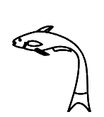
13DD3
|

13DD5
|
U+13DD3 kEH_Desc A fish, with its tail orientated downwards.
U+13DD5 kEH_Desc A fish, with its tail orientated downwards, with two small fins on either side of its body.
I appreciate the fishes are difficult, because the graphical distinctions can be subtle and variable and often encoders need to rely more on function than on appearance, but even so, the above is a problem because the description of U+13DD3 subsumes that of U+13DD5 and the functions are identical. If U+13DD5 is characterized by particular fins, then U+13DD3 deserves to be characterized by particular (other) fins as well.
|
13DD4
|
U+13DD4 kEH_Desc A fish, with its tail orientated downwards (K4A), on top of standard used for carrying religious symbols, with a loop under the horizontal beam, running over the vertical pole (R12A).
The glyph does not have the "loop under the horizontal beam". The Database refers to:
http://sith.huma-num.fr/karnak/4205
The transcription and photo seem to confirm the loop (rather than the diagonal beam).
|
13DD7
|
13DD8
|
U+13DD7 kEH_Desc A fish, with its tail orientated downwards (K4A), on top of legs in a walking posture, feet orientated towards the reading direction (D54).
U+13DD8 kEH_Desc A fish, with its tail orientated downwards, with two small fins on either side of its body (K4B), on top of legs in a walking posture, feet orientated towards the reading direction (D54).
As above. One description subsumes the other. The functions are identical.
|
13DDF
|
13DDC
|
13DDD
|
U+13DDF kEH_Desc A fish without a head, with a tail-fin with a V like shape, with a fin at either side of the body.
U+13DDC kEH_Desc A fish without a head, with a tail-fin with a deep V like shape.
U+13DDD kEH_Desc A fish without head, with a tail-fin with a triangular shape.
I don't think it is accurate to call the tail fin in the glyph of U+13DDF a "V like shape". The tail in U+13DDC is arguably V-shaped, as the description says, but the tail in U+13DDF is closer to that of U+13DDD.

131A3 (5.2)
|
13DE1
|
13DE2
|
U+131A3 kEH_Desc A dung beetle, scarab (scarabaeus sacer).
U+13DE1 kEH_Desc A dung beetle, scarab (scarabaeus sacer), with multiple vertical lines over the carapace.
U+13DE2 kEH_Desc A dung beetle, scarab (scarabaeus sacer), with the red crown (S3) on its head.
If the "multiple vertical lines" are sufficient reason to distinguish U+13DE1 from U+131A3, then the "multiple vertical lines" in U+13DE2 deserve to be mentioned as well. (That is provided the "multiple vertical lines" in the glyph of U+13DE2 are real.)
|
13DE7
|
U+13DE7 kEH_Desc A dung beetle, scarab (scarabaeus sacer) (L1), with outstretched wings, which are curved upwards, connecting, making a circular form.
In the glyph, the wings are not remotely connected and I would not even say the wings make a circular form. I think I know what is meant by "circular form", e.g. the winged scarab pectoral of Tutankhamun has a full circular form with the sun disk in between at the top (and a nb sign at the bottom); see link below. U+13DE7 is not that.
https://egypt-museum.com/winged-scarab-pectoral-of-tutankhamun/
There is a photo in the Database, but that does not have the "connecting" of the wings either. The Database further points to p. 152, l. 12 of:
https://archive.org/details/MMAF25/page/n87/mode/2up
Also this does not have the "circular form". Why then is the description as it is?
|
13E09
|

13E0A
|
U+13E09 kEH_Desc A dom palm tree (Hyphaene thebaica) with sprouts a the bottom, with dom palm dates haning from the top.
U+13E0A kEH_Desc A dom palm tree (Hyphaene thebaica) with sprouts a the bottom, with two trunks.
Correct "at the bottom".
|
13E20
|

13E27
|
U+13E20 kEH_Desc A palm branch, stripped of leaves and notched with a sharp notch (M4B), on top of a stool made of reed matting (Q3).
U+13E27 kEH_Desc A palm branch, stripped of leaves and notched with a sharp notch (M4B), on top of a stool made of reed matting, with internal detail (HGx Q3A).
Overtly violates Point 5 of the Encoding Principles "Signs that exist with and without inner detailing will be included with the inner detailing".

13E41
|

13E42
|
U+13E41 kEH_Desc A lotus flower with internal detail, facing upwards, with a long stalk.
U+13E42 kEH_Desc A lotus flower with internal detail, facing upwards, with a long stalk.
Apart from the violation of Point 5 of the Encoding Principles, the description of U+13E42 is inaccurate. At best, correct U+13E42 to "without".
|
13E44
|
13E47
|
U+13E44 kEH_Desc A lotus flower with internal detail, facing forwards, with a long stalk, folded under itself.
U+13E47 kEH_Desc A lotus flower with a extended central point/a papyrus flower, facing forwards, with a long stalk, folded under itself.
I don't see how anyone can possible justify having the second next to the first. For similar cases of trivial graphical variants in the basic list, there was apparently a decision to make one of them Legacy. I see no consistency. The two shapes are functionally equivalent.
The Database has "I am not certain this [U+13E47] would be a meaningful variant". Quite.
|
13E48
|
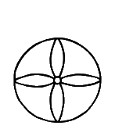
13E4B
|
U+13E48 kEH_Desc A flower, seen seen from above, with seven distinct petals visible inside a wavy circle.
U+13E4B kEH_Desc A flower with four petals in a circle.
The glyph interprets the shape of U+13E48 differently from the description. The glyph is drawn as 7 overlapping heart-shaped petals, while the description sees 7 non-overlapping oval-shaped petals surrounded by a wavy circle. From the pointer in the Database:
http://sith.huma-num.fr/karnak/4081
I would say the description is right and the glyph is wrong (or at least misleading).
Moreover, the photo shows the token does not have 7 but rather 6 petals, while the transcription has 8 petals! This shows once again that having such overly specific descriptions in UniKemet is untenable. The number 7 is completely arbitrary. It is not part of the character identity. It was not dictated by evidence in the form of extant inscriptions, and not even by existing normalized transcriptions. It so happens that someone at some point drew the glyph with 7 petals, and the number 7 was then elevated to a status it doesn't deserve. Claims that an (over)emphasis on (arbitrary) details is somehow more "scientific" should not be readily accepted.
Changing 7 to 6 in the description won't change anything if the week after a token is found which actually has 7 petals. The one obvious solution is not to include the exact number of petals in the description. Then the question becomes whether U+13E4B deserves an independent code point.

13E5E
|
13376 (5.2)
|
U+13E5E kEH_Desc A leaf, stem and root of a lotus plant, with the stem before the leaf bend forwards, with the root resembling a cartouche in a round form (V9), with two angled strokes on either side of the stem.
U+13376 kEH_Desc A cartouche in a round form.
The way the root of U+13E5E is drawn does not exactly suggest V9 (U+13376).
|
13E74
|
13E75
|
U+13E74 kEH_Desc A clump with one papyrus flower, with two buds bent down.
U+13E75 kEH_Desc A stem of papyrus with a bud (M13), with a bud bend down on either side of the stem, on top of a plan of a crossroads in a village (O49).
In U+13E74, there is mention of a "flower", while in U+13E75, what to me looks like the same shape is called a "bud". Can that be right?

13E81
|
U+13E81 kEH_Desc A clump of three papyrus flowers, with the flowers at the side orientated to the sides, with an upwards bud at either side of the group of three flowers; on a base.
More fluent would perhaps be "with the flowers at the sides oriented outwards".

13E82
|
13E81
|
U+13E82 kEH_Desc A flower with a long stem, making a curve turning the flower upside down, between two stems of papyrus with a bud (M13) on top of a circle.
U+13E81 kEH_Desc A clump of three papyrus flowers, with the flowers at the side orientated to the sides, with an upwards bud at either side of the group of three flowers; on a base.
Presumably, a "bud" looks different from a "flower". Yet the three things in the glyph of U+13E82 look identical. My hunch is that the two things on either side should look like the buds in U+13E81.
|
13E8A
|
U+13E8A kEH_Desc A pool or strip of land with three lotus buds, consisting of three vertical buds.
The description seems a bit longer than necessary, unless I misinterpret it. How about just "A pool or strip of land with three vertical lotus buds."?
I see three ticks on top of the land, but I don't think these are important enough to mention.

13E9C
|
Font-technical problem (anti-)clockwise?

13EAA
|
U+13EAA kEH_Desc A bundle of flax stems, bound together with string near the top of the bundle, with the bolls visible on the top.
Apparently "bolls" are "rounded seed capsules of plants such as cotton or flax". What is on top in the glyph is square, not rounded. Is a redraw needed?

13EAB
|

131E7 (5.2)
|
U+13EAB kEH_Desc A bundle of flax, bound together with string near the bottom of the bundle, without internal detail.
U+131E7 kEH_Desc A bundle of flax stems, bound together with string near the bottom of the bundle.
The "near the bottom of the bundle" of U+13EAB doesn't seem to match the glyph.
Also, does adding U+13EAB next to U+131E7 not violate Point 5 of the Encoding Principles "Signs that exist with and without inner detailing will be included with the inner detailing"?
It is unclear to me what the point was of this sign. The Database has a reference to:
https://www.britishmuseum.org/collection/object/Y_EA828
which to me seems to have the string nearer to the top of the bundle than to the bottom. Another example in the Database has the string half-way the bundle. But who cares about the exact position of the string anyway. This may be a typical case of overspecificity of the description, which then inevitably results in inconsistencies.

13EB2
|
U+13EB2 kEH_Desc A basket with two roes of four pieces of grain or fruit.
If it is really necessary to have a sign specifically for 2*4 pieces, then at least make the glyph consistent. There are 9 pieces in the glyph.
My preference would be to underspecify the number of pieces. If the number of rows is significant (and I'm not even convinced of this), one can mention that, e.g.:
"A basket with two rows [or layers] of pieces of grain or fruit."
|
13EB5
|

13EB4
|
U+13EB5 kEH_Desc A vertical bundle of reeds, with a sloped top towards the back; tied together, with the ties at the back, with the tops of the reeds visible.
U+13EB4 kEH_Desc A vertical bundle of reeds, with a sloped top towards the back; tied together, with the ties at the back.
Adding U+13EB5 next to U+13EB4 seems hardly appropriate for Unicode. It appears to be overtly paleographic, and such details are lost in ordinary font sizes and coarse fonts may omit these details anyway.
Also related in spirit to Point 5 of the Encoding Principles.
|
13EEC
|
U+13EEC kEH_Desc A sun-disk with wings at a 90° angle, with an uraeus coming from the sun-disk, filling the space between the two wings.
The glyph suggests the uraeus is in the far corner away from the wings, with a very long tail. However, in the photo of the token pointed to by the Database:
http://sith.huma-num.fr/karnak/4225
the uraeus is closer to the center of the space between the wings.
|
13F03
|
U+13F03 kEH_Desc A parcel of land with irrigation ditches, consisiting of three horizontal lines.
In the glyph, there are *four* horizontal lines, not three. Now, I'm not saying that counting lines is a good thing. My suggestion in keeping with other descriptions in this family of signs would be in the first instance (but see below):
"A parcel of land with irrigation ditches, at right angles."
|
13F05
|

13F06
|
U+13F05 kEH_Desc A parcel of land with irrigation ditches, vertical lines at an angle, extending beyond the top and bottom horizontal line.
U+13F06 kEH_Desc A parcel of land with irrigation ditches, consisting of three by three lines, extending beyond each other.
In both cases, the lines "extend beyond each other". If the glyphs are accurate, then a different way should be found to phrase the difference between U+13F05 and U+13F06 (and preferably not by counting lines). Is it the orientation of the angles, sloping "forward" or sloping "backward"?
But then the question is why the mirroring control could not be used.

13F0A
|
U+13F0A kEH_Desc A parcel of land with irrigation ditches, consisiting of four horizontal lines of blocks.
In keeping with the above, I would say here for U+13F0A:
"A parcel of land with irrigation ditches, at right angles."
and then the description of U+13F03 could be expanded to be distinct from this:
"A parcel of land with irrigation ditches, at right angles, the horizontal lines extending beyond the leftmost and rightmost vertical lines."
|
13F11
|
U+13F11 kEH_Desc A horned desert viper (Cerastes cerastes) (I9), written over a tree (M1), in front of hind-quarters of a seated lion or leopard (F22); on top of a standard used for carrying religious symbols (R12), written on top of a parcel of land with irrigation ditches (N24).
In the glyph the viper is *under* the tree.
|
13F8E
|
U+13F8E kEH_Desc A shrine with vertical sides and a flat roof, with a doorway, with an uraeus at the front tip of the roof.
One could improve the depiction of the uraeus. Currently, one needs some imagination to see a uraeus in the shape.

13F93
|
U+13F93 kEH_Desc A gateway, with the bottom fully closed, with internal detail.
There is no attempt to specify what the "internal details" consist of. I can understand why, as it would be pretty hard to specify what that even means. Should any strokes or texture, no matter how insignificant, be seen as "internal detail"? This supports my view that there should not be multiple code points for the same sign with and without "internal details". Point 5 of the Encoding Principles actually suggests the same.
|
13F98
|
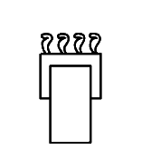
13F99
|
U+13F98 kEH_Desc A plan and façade of a hall, with a cornice with four Uraei on top, orientated forwards.
U+13F99 kEH_Desc A thin plan and façade of a hall, with a cornice with four Uraei on top, orientated forwards.
The two listed functions happen to be different, but unless the two functions are actually tied to the width difference, then this is not a meaningful distinction for Unicode, and consistency between fonts will be impossible to achieve.
In the Database I see a comment "I am not sure the variation between the O16 variants (broad vs less broad) is meaninful enough to include in Unicode", but also "Seems too numerous to leave out". The first comment is more than reasonable, but the second comment is moot. I'm sure that you will be able to find lots of occurrences of the flat N025A next to the tall N25 (the "foreign land" sign) in encodings, but that doesn't mean that N25 and N025A have independent character identities. If you believe that N025A (U+1320A) was made Legacy for good reasons (and I would agree), then why should U+13F98 and U+13F99 both exist as core signs in Unicode?
|
13FA1
|
13FA2
|
U+13FA1 kEH_Desc A façade of a shrine with a flat roof, with oblique sides, with a large doorway, with a pole in front, with a horizontal line over the roof, connected to the roof with three vertical lines.
U+13FA2 kEH_Desc A façade of a shrine with a flat roof, with oblique sides, with a large doorway, with a pole in front, with a horizontal line over the roof, connected to the roof with two vertical lines.
This distinction is so silly that even the number of vertical lines in the glyph of U+13FA1 is wrong (it is four in the glyph, not three).
Understandably, in the Database we find:
"I could not verify any token with an glyph, and for Unicode only F2ED7 (O329A) OR F2EDA (O329) should be added, not both."
Was it a mistake then that both U+13FA1 and U+13FA2 ended up being added to Unicode as core signs?
|
13FA3
|
U+13FA3 kEH_Desc The façade of a shrine with a flat roof, with oblique sides, with a large doorway, with a long horizontal line coming from the front of the base, the front tip connected with a curved line going to the front tip of the roof, resembling a representation of two ribs, written parallel (Aa15).
The glyph and the description don't seem to match. Flat roof? Where is the large doorway? The Database points to p. 122, l. 1 and pl. 74, col. 35 of:
https://www.ifao.egnet.net/uploads/publications/enligne/Temples-Dendara010.pdf
The transcription is like the above glyph. The image is not clear, but at least seems consistent with the transcription.

13FA7
|
U+13FA7 kEH_Desc The emblem erected outside the temple of Min, resembling the horns of a bovid (F13) on top of a stem of papyrus with a bud (M13), with a coil of rope (V1) between the horns, connected to a cone, with a spike on top, from which a shrine with a flat roof comes forth.
I would make the spike more spiky. Now it just looks like a circle.
|
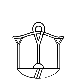
13FCD
|
U+13FCD kEH_Desc A booth with a round roof, supported by three columns, with the outer two having a flower-like capital, with the middle column resembling a rolled up herdsman's shelter of papyrus (V18); on top of an alabaster basin with a diamond shaped inner marking (W3).
In the glyph, I don't see the usual shape of V18.
|
13FD2
|
U+13FD2 kEH_Desc A double pavilion, with columns topped with a triangle, with two carrying chairs (Q2), facing away from one another; on top of an alabaster basin with a diamond shaped inner marking (W3).
Because I didn't understand how to interpret "triangles" I consulted the link in the Database to:
https://thotsignlist.org/mysign?id=4590
The TSL currently has 8 tokens of O23, only one of them has triangle-shaped capitals. This again reveals that a description in UniKemet does not describe a sign, but rather describes one particular, arbitrarily chosen, instance of a sign. It makes very little sense to me that a description would be so specific. If it is really necessary in Unicode to distinguish columns in pavilions with and without capitals (which I already find quite a stretch), then specifying the exact shape of the capitals in my opinion goes too far.
Apropos, it shouldn't be hard to find tokens of this sign that have proper capitals that don't look like triangles. See for example p. 116 l. 17 of:
https://archive.org/details/MMAF13f2/page/n47/mode/2up
Then there are countless other forms, for example where only two of the four columns have capitals (in the shape of "triangles" or otherwise), such as in pl. 218 of:
https://isac.uchicago.edu/sites/default/files/uploads/shared/docs/oip51.pdf
It is madness to try to capture all cases by separate code points. It becomes unavoidable sooner or later to abstract away from tokens, that is, to have a single code point that covers multiple tokens that differ in discrete ways.
|
13FD6
|
U+13FD6 kEH_Desc A booth with a round roof, supported by two columns resembling a stem of papyrus with a bud (M13), with an abacus; on top of a base (O210A).
The glyph and the description are at the very least misleading. What are supposed to be abaci appear to be drawn as tips of the sky sign. Also, there is not one base, but rather two bases, one under each column. This is confirmed by the pointer in the Database:
http://sith.huma-num.fr/karnak/3552
I suggest making the description less ambiguous with regard to the base(s). It is a legitimate question whether presence/absence of abaci is essential to the character identity in Unicode. I would ignore them, both in the glyph and in the description.

13FD7
|
U+13FD7 kEH_Desc A ram (Ovis longipes palaeo-aegyptiacus), standing, without a beard (E11), with a round vessel with an upstanding rim (W24) above its back; written inside a booth consisiting of the sky (N1), supported by two columns resembling a stem of papyrus with a bud (M13), with an abacus; on top of a base (O210A); on a broad base.
The token referred to by the Database is on p. 21 of:
https://www.ifao.egnet.net/uploads/publications/enligne/Temples-Esna007.pdf
The "on top of a base (O210A); on a broad base" should probably be "on top of a broad base" if the facsimile is accurate. That is, I don't see two bases (one below each column) in addition and on top of the one broad base.
I also don't see abaci in additions to the tips of the sky sign. Conversely, could it have been that the tips of the sky sign are the abaci? Why bother mentioning the abaci in the first place? It is a tiny detail and likely not essential to the character identity.
|
13FEB
|
U+13FEB kEH_Desc A column resembling a stem of papyrus with a bud (M13), on a base, with a
Truncated description.

13FF2
|
U+13FF2 kEH_Desc A door-bolt (O34), written over two human feet and lower legs (D58), arranged horizontally.
The Database says "Needs to be atomic due to the position of the O34."
Nonsense, because (1) whether O34 is 1pt higher or lower relative to the legs is paleography, and (2) it is the font's responsibility to arrange signs in a suitable manner. This exact group was in fact listed in:
https://nederhof.github.io/hierojax/ligaturelist.html
And here linked to insertions:
https://nederhof.github.io/hierojax/insertionlist.html
If we are starting to encode groups atomically because we wish to fine-tune their exact positioning, then why did we bother with controls in the first place? Controls by definition abstract away from exact positionings. The advantages of controls are normalization and abstraction. Are we willing to give up on these advantages now? It makes no sense to on the one hand deprecate clearly distinct graphical variants in the basic list (making them Legacy), motivated by the advantages of normalization and abstraction, while on the other hand introducing new atomic encodings of compositional groups, moving away from normalization.
And if you accept that Unicode needs to encode fine-tuned positioning, then the one or two ligatures that have slipped through in the extended Unicode set will not suffice. You will need to start introducing possibly hundreds of additional code points of compositional groups. I don't think anyone would be happy with that either.

13FFF
|
1329A (5.2)
|
U+13FFF kEH_Desc A heap of grain on a raised floor, without internal detail.
U+1329A kEH_Desc A heap of grain on a raised floor.
Introduction of U+13FFF violates Point 5 of the Encoding Principles:
"Signs that exist with and without inner detailing will be included with the inner detailing".

14006
|
14007
|
U+14006 kEH_Desc An ornamental chevaux de frise on top of walls, with a circle dividing the top and base, with the top spreading like a flower.
U+14007 kEH_Desc An ornamental chevaux de frise on top of walls, with a circle dividing the top and base, with the top spreading like a flower, with a circle on top of the tip.
Hm, I think I understand what is meant (something in the vein of "the kind of chevaux de frise that typically occurs on top of a wall"), but there are no walls in the glyphs. I would just omit "on top of walls".
|
1400C
|
U+1400C kEH_Desc The emblem erected outside the temple of Min, resembling the horns of a bovid (F13) on top of a stem of papyrus with a bud (M13), with a sun disk (N5) between the horns, connected with a line to a cone with a spike on top.
I would make the spike more spiky because currently it doesn't look like a spike.

13294 (5.2)
|
14010
|
14011
|
14012
|
U+13294 kEH_Desc A plan of a prehistoric building at the town of Nekhen, written as an oval, without the angled lines touching the oval.
U+14010 kEH_Desc A plan of a prehistoric building at the town of Nekhen, written as an oval, with the angled lines touching the oval.
U+14011 kEH_Desc A plan of a prehistoric building at the town of Nekhen, written as an oval, with multiple angled lines used as internal decoration.
U+14012 kEH_Desc A plan of a prehistoric building at the town of Nekhen, written as an oval, with four angled lines, touching the oval.
If it is really necessary to distinguish these, then in U+13294 and U+14010, at least specify *two* angled lines. Perhaps for U+14011 one could replace "multiple" by "more than 4".
|
14014
|
U+14014 kEH_Desc A rectangular stone slab or brick, on top of two stone slaps or bricks, arragned horizontally, with a bit of space between them.
The glyph doesn't match the description very well. Consider the bottom horizontal line in the middle, which is too high.

14027
|
14028
|
U+14027 kEH_Desc A boat/ship, resembling a crescent moon, on top of a rectangle of water, with an oar/rudder at the back.
U+14028 kEH_Desc A boat/ship, resembling a crescent moon, on top of a rectangle of water, with an oar/rudder at the back.
Why is this not the same sign (with two different but related functions)?
The Database has "Meaningless variant". Well then?
|
14032
|
U+14032 kEH_Desc A boat/ship with an inward curved prow and stern, on top of a rectangle representing water, with an oar/rudder at the back.
In the glyph there are *two* oars/rudders at the back.
|
14041
|
1403F
|
14089
|
U+14041 kEH_Desc A boat/ship, resembling a crescent moon, with a sail, with a cross-bar over the mast.
U+1403F kEH_Desc A boat/ship, resembling a crescent moon, on top of a rectangle of water, with a sail, with a cross-bar over the mast, with the mast supported by ropes on either side, with an oar/rudder at the back.
U+14089 kEH_Desc A sail, with a point at the bottom, angling forwards, with a distinct beam at the top, with a mast in front of the sail, with a cross-beam over the mast.
The "crossbar" in U+14041 is not depicted like the crossbar in e.g. U+1403F. Is it that crossbars can look very different? Or is the glyph of U+14041 wrong?
By the way, is a "crossbar" (U+1403F) the same thing as a "crossbeam" (U+14089)? It looks the same. Perhaps the terminology can be made consistent?

14042
|
14050
|
U+14042 kEH_Desc A boat/ship, resembling a crescent moon, on top of a rectangle of water, with a sail on top of a rectangle, with an oar/rudder at the back.
U+14050 kEH_Desc A boat/ship with a prow and stern curved inwards, ending with a flower-like shape, with a circle inside the boat/ship.
The description of U+14042 is not nearly as detailed as some others. For one thing, it doesn't mention the shapes at the ends of the "crescent moon", which are not like other boats, apart from U+14050 perhaps, which has "prow and stern curved inwards".
Another thing is that the "back" is at the left, unlike other boats where the back is at the right. It would be good to write in descriptions where prow and stern appear reversed.
|
14043
|
14044
|
U+14043 kEH_Desc A boat/ship with a prow and stern resembling the handle of a sickle (U1), on top of a rectangle resembling water, with a façade of a shrine with a flat roof, with oblique sides, with a large doorway (O21B) inside the boat/ship, with an oar/rudder at the back.
U+14044 kEH_Desc A boat/ship with a prow and stern resembling the handle of a sickle (U1), on top of a rectangle resembling water, with a façade of a shrine with a flat roof, with oblique sides, with a large doorway (O21B) inside the boat/ship.
Where is the "doorway" in the glyphs? For U+14043, the Database refers to:
http://sith.huma-num.fr/karnak/4212
I don't see a doorway there, neither in the transcription nor in the photo. For U+14044, the Database refers to p. 46, l. 11 and pl. 32 of:
https://www.ifao.egnet.net/uploads/publications/enligne/Temples-Dendara011.pdf
but that is the wrong sign (U+14045), at least in the transcription and the photo isn't very clear.
|
14045
|
14046
|
U+14045 kEH_Desc A boat/ship with a prow and stern resembling the handle of a sickle (U1), on top of a rectangle resembling water, with a shrine, seen from the side, with a downwards sloping roof, with an uraeus at the front of the roof (O18A) inside the boat/ship.
U+14046 kEH_Desc A boat/ship with a prow and stern resembling the handle of a sickle (U1), on top of a canal (N36), with a shrine, seen from the side, with a downwards sloping roof, with an uraeus at the front of the roof (O18A) inside the boat/ship.
The glyph seems to suggest a doorway not mentioned in the description. For U+14045, the Database refers to p. 297, l. 8 and pl. 171, col. 10 of:
https://www.ifao.egnet.net/uploads/publications/enligne/Temples-Dendara010.pdf
Here there is a doorway. For U+14046, the Database refers to p. 362, l. 12 of:
https://www.ifao.egnet.net/uploads/publications/enligne/Temples-Dendara015.pdf
which also has a doorway.
|
14048
|
14065
|
14067
|
14069
|

1406A
|
U+14048 kEH_Desc A boat/ship, resembling a crescent moon, with the head of a falcon, with the sun, encircled by a cobra (Naja haja), standing up, with expanded hood (Uraeus) (N6) on top of the head, on top of the prow and stern, on top of a rectangle of water, with a shrine, seen from the side, with a downwards sloping roof, with an uraeus at the front of the roof (O18A) inside the boat/ship, with an oar/rudder at the back.
U+14065 kEH_Desc A moon-sickle shaped boat with an higher prow than stern, with the head of an antilope (F81) on top of the prow, on top of a rectangle representing water, with a falcon (G5) standing on top of a façade of a shrine with a flat roof, with oblique sides, with a large doorway (O21B), inside the boat/ship, with an oar/rudder at the back.
U+14067 kEH_Desc A moon-sickle shaped boat with an higher prow than stern, with the head of an antilope (F81) on top of the prow, on top of a rectangle representing water, with a falcon (G5) standing on top of a tall cone shape, inside the boat/ship, with an oar/rudder at the back.
U+14069 kEH_Desc A moon-sickle shaped boat with an higher prow than stern, with the head of an antilope (F81) on top of the prow, on top of a sledge with two vertical internal strokes, with a falcon (G5) staninding on top of a low cone shape, inside the boat/ship, with an oar/rudder at the back.
U+1406A kEH_Desc A moon-sickle shaped boat with an higher prow than stern, with a rudder, with the head of an antilope (F81) on top of the prow, facing inwards, with a downwards line with multiple horizontal lines written over it coming from the head, on top of a sledge.
The description of U+14065 mentions a doorway while U+14048 doesn't. The shape of the shrine looks the same to me though.
There appear to be *two* oars/rudders in the glyphs while the descriptions have "an oar/rudder" or "a rudder".

1404D
|
13933
|
U+1404D kEH_Desc A boat/ship, resembling a crescent moon, with the head of a woman, with a headdress of bovine horns with a sun disk (F102), on top of the prow and stern, on top of a rectangle resembling water, with a façade of a shrine with a flat roof, with oblique sides, with a large doorway (O21B) inside the boat/ship.
U+13933 kEH_Desc The head of a goddess, seen in profile, wearing a headdress of bovine horns with a sun disk (F102), wearing the vulture headdress, on top of a staff.
I don't see a doorway in the glyph of U+1404D. Also, in the vague image I seem to make out the vulture headdress underneath the bovine horns headdress, just like U+13933. Is that real?
The Database refers to p. 147, l. 2 and pl. CCCCXXXIX of:
https://www.ifao.egnet.net/uploads/publications/enligne/Temples-Dendara005.pdf
I would interpret the photo as showing a large doorway, but it is uncertain there is a vulture headdress.
I think that doorways should not be mentioned in the descriptions of facades, as they are an overly palaeographic detail irrelevant on the level of Unicode, especially if a facade is a secondary item in a larger graphical composition, e.g. a facade on a boat. The fact that there are so many cases where description and glyph are inconsistent when it comes to absence/presence of doorways confirms this. If half the time it couldn't be correctly specified whether there is or is not a doorway, then apparently it doesn't matter that much and it isn't part of the identities of signs anyway. The same could be said about sun disks on uraei, and about hairstyles for most "men" signs, ankh signs in certain circumstances (see below), and so on. A fair amount of pointless work would immediately fall away and make life easier for sign list developers, for font designers, and last but not least for encoders. What has been done for Unicode 16 is not sustainable.
|
1405C
|
U+1405C kEH_Desc God, standing, with the head of a falcon, with with a sun-disk (N5) on his head, facing towards the back, both arms raised in front, hands held vertically, handpalms outwards, in front of a goddess, standing, with a headdress of bovine horns with a sun disk (F102), right arm forward, hand at the hight of the waist, holding a sceptre with a straight shaft, forked bottom and head of the Seth animal (S40) of the same size as the woman, left arm hanging beside the body, holding a tie or strap, used with sandals (ankh-sign, S34), at the loop (C228); inside a boat/ship with a prow and stern resembling the handle of a sickle (U1), on top of a canal (N36).
I cannot make out the ankh sign. Is it not there, or does it vanish within the image resolution?
The Database refers to p. 231, l. 12 of:
https://www.ifao.egnet.net/uploads/publications/enligne/Temples-Dendara004.pdf
In the printed transcription, I cannot make out an ankh sign either. This is one of many examples that suggest that there is a good case for not encoding lower-level details, that is, not mentioning them in the descriptions and not attempting to clearly display them in the glyphs. For one thing, this should avoid overinterpretation of photos and normalized transcriptions and hallucinating things that might not be real.

14068
|

1406B
|
1406C
|
U+14068 kEH_Desc A moon-sickle shaped boat with an higher prow than stern, with the head of an antilope (F81) on top of the prow, on top of a sledge with two vertical internal strokes, with a falcon (G5) staninding on top of a rectangular shrine, inside the boat/ship, with an oar/rudder at the back.
U+1406B kEH_Desc A moon-sickle shaped boat with an higher stern than prow, with the head of an antilope (F81) on top of the stern, on top of a rectangle representing water, with a tall shrine with a round roof, with two vertical lines enclosing the top, on a base, without internal decoration (GID O20D), written inisde the boat/ship.
U+1406C kEH_Desc A moon-sickle shaped boat with an higher stern than prow, with the head of an antilope (F81) on top of the stern, with lines crossing the prow, on top of a sledge with two vertical internal strokes, with a tall shrine with a round roof, with two vertical lines enclosing the top, on a base, without internal decoration (GID O20D), written inisde the boat/ship.
There is "with an oar/rudder at the back" for U+14068, there is "with lines crossing the prow" for U+1406C, and nothing comparable for U+1406B. Yet the shape looks identical in all three glyphs. For consistency, can we just have "with an oar/rudder at the back/front" for all these cases?
|
14067
|
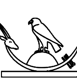
1406E
|
U+14067 kEH_Desc A moon-sickle shaped boat with an higher prow than stern, with the head of an antilope (F81) on top of the prow, on top of a rectangle representing water, with a falcon (G5) standing on top of a tall cone shape, inside the boat/ship, with an oar/rudder at the back.
U+1406E kEH_Desc A moon-sickle shaped boat with an higher prow than stern, with the head of an antilope (F81) on top of the prow, on top of a rectangle representing water, with a falcon (G5) standing on top of a low cone shape inside the boat/ship, with an oar/rudder at the back.
Why are these not the same sign? "tall" versus "low" is palaeography, and meaningless on the level of Unicode. If you ask me as font designer to create glyphs for these two, given the examples in the code charts and the descriptions, I will draw two identical shapes. Both signs are functionally equivalent, representing the Henu-bark of Sokar.
|
14070
|

14075
|
U+14070 kEH_Desc A moon-sickle shaped boat with an higher prow than stern, with a rudder, with the head of an antilope (F81) on top of the prow, facing inwards, with a downwards line with multiple horizontal lines written over it coming from the head, on top of a sledge, with a falcon (G5), standing on top of a rectangular shrine, with vertical lines as internal detail, written inside the boat/ship.
U+14075 kEH_Desc A moon-sickle shaped boat with an higher prow than stern, with the head of an antilope (F81) on top of the prow, with a downwards line with multiple horizontal lines written over it coming from the head, on top of a sledge represented by four vertical lines between two horizontal lines, with a falcon with spread wings, on top of a low cone shape inside the boat/ship, embracing the cone with its wings, with an oar/rudder at the back.
Missing from the glyph are the "multiple horizontal lines written over it" in the glyph of U+14070. What was meant is similar to U+14075. This is confirmed by the pointer in the Database to pl. 53,A of:
https://archive.org/details/sethos4/page/52/mode/2up
Further, the internal lines of the shrine and the lines of the sledge should not have been drawn as one and running over the boat/ship, and they should be vertical, not diagonal.
|
14074
|
U+14074 kEH_Desc A moon-sickle shaped boat with an higher prow than stern, with the head of an antilope (F81) on top of the prow, on top of a sledge represented by four vertical lines between two horizontal lines, with a falcon with spread wings, on top of a low cone shape inside the boat/ship, embracing the cone with its wings, with an oar/rudder at the back.
The shape of the sledge as described ("four vertical lines between two horizontal lines") does not at all correspond to the glyph. The Database refers to p. 238, l. 5 and pl. 138 of:
https://www.ifao.egnet.net/uploads/publications/enligne/Temples-Dendara010.pdf
This confirms the shape as in the glyph. It seems to me the description needs revision.
|
14076
|

14077
|
U+14076 kEH_Desc A fishersman's boat, with a net inside the boat, with internal detail.
U+14077 kEH_Desc A fishersman's boat, with a net inside the boat, without internal detail.
It is hard to imagine a more blatant, more literal violation of Point 5 of the Encoding Principles:
"Signs that exist with and without inner detailing will be included with the inner detailing"
Most of the Encoding Principles use weasel words that allow unlimited proliferation of variant shapes despite giving the impression of wanting to keep the number of variant shapes within reasonable bounds. If even one of the clearer Encoding Principles is so flagrantly broken, then what is the point of having the Encoding Principles in the first place?

1407A
|
U+1407A kEH_Desc A boat/ship, on top of a rectangle representing water, with a horizontal rectangle inside the ship with vertical lines as internal decoration, with three vertical poles on top of the rectangle, with a line running from the top of the middle pole to the front and stern, forming a triangular shape, with an oar/rudder at the back.
The glyph suggests *two* oars/rudders.
I would not call the mentioned shape in the glyph a "horizontal rectangle". A rectangle consists of straight lines, while the shape is prominently curved. Perhaps say "flat shape inside between prow and stern with vertical lines as internal decoration"?

1407C
|
U+1407C kEH_Desc A rectangular sail, with the mast over the sail, with two loops of rope coming from the lower beam of the sail, looping over the mast.
In the glyph, I don't really see two loops coming from the lower beam of the sail, more like one and half loops. One of the loops ends at the mast, which does not seem quite consistent with the description. The glyph is consistent with the reference pointed to by the Database, p. 134, l. 4 of:
https://www.ifao.egnet.net/uploads/publications/enligne/Temples-Esna007.pdf
|
14084
|

14085
|
U+14084 kEH_Desc A sail, with a point at the bottom, angling backwards, with a distinct beam at the top, with a mast in front of the sail.
U+14085 kEH_Desc A sail, with a point at the bottom, angling backwards, with a mast in front of the sail.
I suspect "point" is a dutchism. The shape at the bottom right I would call a "corner", not a "point".

14086
|
U+14086 kEH_Desc A rectangular sail, with the mast over the sail, with a cross-beam over the sail, with rigging coming from the top of the sail to the mast.
I see no "cross-beam over the sail" in the glyph. I think I see a cross-beam over the mast, *below* the sail. If the cross-beam is over the sail as in the description, what exactly is this supposed to look like?
In the Database I find comments "For Unicode, I would argue to only include P5, not any of the many variants (which will be covered in TSL)" and "(P5) will be sufficient for Unicode". The fact that there are now unresolved issues for U+14086 and for several other "sail" signs vindicates these comments. Graphical variants that differ in no more than minute details cause endless inconsistencies and misery for font designers and encoders alike. I don't understand why this sign was included despite these comments in the Database arguing against it.
|
14088
|
U+14088 kEH_Desc A sail, with a point at the bottom, angling backwards, with a distinct beam at the top, with a mast in front of the sail, with a cross-beam over the mast, with rigging coming from the top of the sail to the mast.
Hm, here I don't see a "point" (corner), but rather a short "distinct" beam at the bottom of the sail extending to the right, and a sail between the two "distinct" beams.
|
14089
|
U+14089 kEH_Desc A sail, with a point at the bottom, angling forwards, with a distinct beam at the top, with a mast in front of the sail, with a cross-beam over the mast.
Correct "point" to "corner".

1408B
|
U+1408B kEH_Desc A mast of a ship, with two prongs, with filling between the prongs.
"filling"? If this is what is meant, I would say something like "without depicting the space between the prongs". Unless "filling" is sailor's jargon for something specific.

140F4
|
U+140F4 kEH_Desc A censer for fumigation, written vertically, with a triangular shape at the top and the bottom.
I don't think the shapes in the glyph can be described as triangular. One end is ever so slightly wider than the other end.

14109
|

1410A
|

1410B
|

1410C
|

1410D
|
14110
|
U+14109 kEH_Desc A cloth wound on a pole, an emblem of divinity (R8), written over top of a butchers block, with the pole at the bottom of the block, at the back of a rectangular base, with a feather (H6), angled forwards on the tip of the base.
U+1410A kEH_Desc A cloth wound on a pole, an emblem of divinity (R8), written over top of a butchers block, with the pole at the bottom of the block, on top of a rectangular base, with a feather (H6), angled forwards on the tip of the base and a sandy hill slope (N29) behind the butchers block.
U+1410B kEH_Desc A cloth wound on a pole, an emblem of divinity (R8), written between a sandy hill slope (N29) and a butchers block.
U+1410C kEH_Desc A cloth wound on a pole, an emblem of divinity (R8), written between a butchers block and a sandy hill slope (N29), with a feather (H6), angled forwards at the front tip of the butchers block.
U+1410D kEH_Desc A cloth wound on a pole, an emblem of divinity (R8), written between a butchers block and a sandy hill slope (N29), with a feather (H6) on the butchers block and hill.
U+14110 kEH_Desc A feather (H6), angled forwards on top of a butchers block, on the front of a base, with a cloth wound on a pole, an emblem of divinity (R8) at the back of the base, with a half round loaf of bread (X1), above the hill country over the edge of the cultivated areas (N25), written between the butchers block and the emblem of divinity.
In U+1410B, U+1410C, U+1410D the mentioned things are connected by a line at the bottom. The line is thin in U+1410C while it is thick and prominent in U+1410B and U+1410D. By all reasonable measures, the thickness should not matter as to the character identity. Even if the line is drawn as in U+1410A, it is still just a line. I doubt there are any good reasons for talking about "base" in U+14109 and U+1410A while not even mentioning the connecting line in U+1410B, U+1410C, U+1410D.
The description of U+14110 does mention "base", while the glyph has just a thick line, just like U+1410B and U+1410D.
My proposal would be to have "on a base" (not "a rectangular base") for all such signs for consistency.
|
1410A
|
U+1410A kEH_Desc A cloth wound on a pole, an emblem of divinity (R8), written over top of a butchers block, with the pole at the bottom of the block, on top of a rectangular base, with a feather (H6), angled forwards on the tip of the base and a sandy hill slope (N29) behind the butchers block.
The pole is not at the bottom of the block in the glyph.
This is a typical case where, if we are not to lose our sanity and blow up the sign list by gazillions more of uninteresting graphical variants, we should make the description broader. We could allow a pole on top of the block *or* at the bottom of the block, we could omit mention of the angle of the feather, etc. That is, we should be moving towards an actual sign list rather than a token list.

1412D
|
U+1412D kEH_Desc A spear made into a standard, resembling a fire-drill in a piece of wood (U28), with a loop over the standard (Jsesh R15A), on top of the hill country over the edge of the cultivated areas (N25).
In the glyph, there are two dots on either side of the fire-drill. Are those supposed to be there?

14147
|
U+14147 kEH_Desc Two bones of a fossil squid (belemnite) (R22), on top of a standard used for carrying religious symbols (R12).
Minor matter but the black blob on the left seems uncharacteristic. May be clockwise / anti-clockwise font-technical issue of an inner curve.
|
141AB
|
U+141AB kEH_Desc A shoulder knot, with loops a the top ends and ties at the bottom ends, with circular blobs on top of the middle section, and vertical strokes below the vertical section.
Correct "a the top ends" to "at the top ends".

14153
|

132D3 (5.2)
|
U+14153 kEH_Desc The white crown (S1), on top of a plan of a crossroads in a village (O49).
U+132D3 kEH_Desc The white crown (S1), on top of a plan of a crossroads in a village (O49).
If you think you can justify having 2 codepoints for these trivial graphical variants, then at the very least you need to have two distinct descriptions.

14157
|

132D8 (5.2)
|
U+14157 kEH_Desc The red crown (S3), on top of a plan of a crossroads in a village (O49).
U+132D8 kEH_Desc The red crown (S3), on top of a plan of a crossroads in a village (O49).
As above.

1416B
|
U+1416B kEH_Desc A crown, consisting on three horizontally arranged Atef crowns with a round bulb at the top, and the sun-disk at the base, on top of the horns of a ram, with an uraeus, with a sun disk on the head, facing outwards, at either side of the crown, with two ureai hanging downwards from the horns at either side.
I cannot match this to the glyph at all. Where is the "an uraeus, with a sun disk on the head"? The Database points to p. 169 l. 4 of:
https://www.ifao.egnet.net/uploads/publications/enligne/Temples-Esna002.pdf
Apart from the two uraei hanging down, there are no additional uraei, so I assume the description is wrong.
It is also easy to misinterpret "two ureai hanging downwards from the horns at either side"; there are examples (at least in iconography) where four uraei in total, two on each side, are hanging from the Atef crowns, see e.g. here:
https://www.worldhistory.org/image/2508/tutankhamun--ankhsenamun/

1416C
|
U+1416C kEH_Desc A crown, consisting on three horizontally arranged Atef crowns with a round bulb at the top, and the sun-disk at the base, on top of the horns of a ram, with an uraeus, with a sun disk on the head, facing outwards, at either side of the crown.
I don't see a sun disk on either uraeus in the glyph. The Database points to:
http://sith.huma-num.fr/karnak/4209
The transcription does not have sun disks, while the photo of the heavily eroded inscription could potentially be interpreted to have sun disks. There is another token that (in normalized transcription) does have sun disks, namely p. 169 l. 3 of:
https://www.ifao.egnet.net/uploads/publications/enligne/Temples-Esna002.pdf
An example of this crown with sun disks, albeit from iconography, is in Fig. 21 of:
https://archiv.ub.uni-heidelberg.de/propylaeumdok/2891/1/Beinlich_Faiyum_2013.pdf
The main thing is that glyph and description are consistent. Adding sun disks to the glyph seems the most straightforward way to achieve this in this instance. But more generally, one should seriously consider not encoding low-level details at all, i.e. not mentioning them in descriptions and not trying to visibly render them in glyphs, to circumvent problems that are inherently unsolvable.

14179
|
U+14179 kEH_Desc A headdress consisting of two feathers on top of the horns of a ram, with a cobra (Naja haja), standing up, with expanded hood (Uraeus), with sun disks its head on either side of the feathers, orientated outwards.
Correct "with sun disks its head" to "with a sun disk on its head".
|
1418E
|
U+1418E kEH_Desc A necklace, consisting of a deep loop with three horizontal lines over it, with the capital of a column, in the form of the face of a human female, with hair in two curling sidelocks, with the ears of a bovid (O215) at the bottom of the loop, connected with a rectangle to the lowest horizontal line; with ornamental terminals resembling the same capital (O215), with outwards and downwards curving strings with flower-like end-pieces coming from the terminals.
Huh? What face of a human female? I would need to see an image of what this should look like.
The Database has "although this form will suffice for Unicode, in reality the sign from the source is a lot more elaborate". Then why does the description not describe "this form"? For font designers and encoders alike it creates unsolvable problems if example glyphs and descriptions are mutually inconsistent.
|
141AF
|

132EF (5.2)
|
U+141AF kEH_Desc A kilt or apron, with the side sections forming a sickle shape.
U+132EF kEH_Desc A kilt or apron.
How are there sickle shapes? To me, U+132EF and U+141AF look identical except that one is slightly wider than the other, which is generally not a good enough reason to introduce multiple code points.
The Encoding Principles have under point 2:
"Chubby or slender signs are part of this continuum and will not be differentiated." TSL has one atypical token TSL_3_20841, and I wonder whether that was the one that was thought to have "sickle shapes":
https://thotsignlist.org/mysign?id=5650
The Database has "Not a meaningful variant". I would agree. Perhaps TSL_3_20841 is just a one-off, clumsily carved instance of the kilt, rather than an independent shape. But then why was it added?
|
141B6
|
U+141B6 kEH_Desc A horizontal strip of cloth with six fringes.
I count seven fringes in the glyph. The most obvious solution is to abstract away from the exact number. The description could have "with six or more fringes". That there is a code point specifically for five fringes is already far-fetched.
One cannot keep extending the sign list as if it were a list of tokens. A sign list is a list of types, a type being an abstraction of one or more tokens.
|
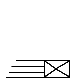
141BF
|

141C0
|

132F7 (5.2)
|
U+141BF kEH_Desc A rectangular piece of cloth, with sloping fringes on its front short side, with a cross shape as internal decoration.
U+141C0 kEH_Desc A square piece of cloth, with long sloping fringes on its front short side, with a cross shape as internal decoration.
U+132F7 kEH_Desc A rectangular piece of cloth, with sloping fringes on its front short side, without internal decoration.
A square is a special case of a rectangle such that the width and height are exactly the same. The fringes of U+141BF and U+141C0 are comparably long, drawn slightly differently but so what? It doesn't seem appropriate to me that such shapes would be distinguished in Unicode (cf. again the Encoding Principles).
The Database says of U+141BF that it is "[n]ot a meaningful variant of [U+132F7]"; but note that the shape of U+132F7 in Unicode 16 has sloping fringes, whereas the intended shape in Unicode 5.2 is non-sloping. I see no reflection in the Database on what the core difference between U+141BF and U+141C0 is supposed to be.
|
141D5
|

141D6
|
U+141D5 kEH_Desc A sceptre with a straight shaft, a forked base, topped with the head of the Seth animal (S40), under a crescent moon (N11) shape topped with a feather (H6).
U+141D6 kEH_Desc A sceptre with a straight shaft, a forked base, topped with the head of the Seth animal (S40), under a crescent moon (N11) shape topped with a feather (H6), written on top of a standard used for the carrying of religious symbols with the vertical stick at the far side (R92A).
If the circle section is to represent a crescent moon, then the glyph doesn't do a very good job of representing this, i.e. it is nothing like N11 as it occurs in most fonts.

141D7
|
U+141D7 kEH_Desc A sceptre with a straight shaft, a forked base, topped with the head of the Seth animal (S40), under a double crescent moon (N11), arranged vertically, topped with a feather (H6), written on top of a standard used for the carrying of religious symbols (R12).
What is a double crescent moon supposed to look like? Just two circle sections like currently in the glyph?

14201
|
U+14201 kEH_Desc A shield with a rounded top, with a boss in the center.
In the glyph, I see a "boss near the top", not in the center.
|
1420D
|
U+1420D kEH_Desc An arrow with a splayed arrowhead, and rounded fletching.
The fletchings don't seem rounded to me. (But who cares. This is palaeography of the one particular token that was found, and is not part of the character identity.)
|
14214
|
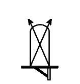
14217
|
14216
|
U+14214 kEH_Desc A shield with a rounded top, with two arrows crossed over it, fletching upwards (T62), on top of a standard used for carrying religious symbols, with a loop under the horizontal beam, running over the vertical pole (R12A).
U+14217 kEH_Desc A shield with a rounded top, with two arrows crossed over it, arrowheads at the top; on top of a standard used for carrying religious symbols, with a short vertical pole, with a loop under the horizontal beam, running over the vertical pole (R56).
U+14216 kEH_Desc A shield with a rounded top, with two arrows crossed over it, fletching upwards (T62), on top of a standard used for carrying religious symbols, with a short vertical pole, with a loop under the horizontal beam, running over the vertical pole (R56).
I see no "loop" in U+14214, nor in U+14217. For U+14214 the Database refers to:
http://sith.huma-num.fr/karnak/4205
The inscription is rather eroded, but it seems a reasonable guess to interpret the sign as having a "loop" as in the description, rather than a diagonal beam. For U+14217 the Database refers to p. 94, l. 6 of:
https://archive.org/details/MMAF25/page/n59/mode/2up
Here the transcription has a "loop" as well instead of the diagonal beam, confirming the description.
Even before, the Database had for U+14216: "I am not sure if it is that valuable for Unicode". After correcting the glyphs of U+14214 and U+14217, U+14216 becomes basically a duplicate of U+14214, and there should be even less reason for it to exist.
|
14231
|
14232
|
U+14231 kEH_Desc A scimitar (khopesh), written vertically, blade curving inwards, with the head of a falcon with he sun within a halo, encircled by a cobra (Naja haja), standing up, with expanded hood (Uraeus) (N6); on top of the head.
U+14232 kEH_Desc A scimitar (khopesh), written vertically, blade curving forwards, with the head of a falcon with he sun within a halo, encircled by a cobra (Naja haja), standing up, with expanded hood (Uraeus) (N6); on top of the head.
"sun within a halo" suggests there should be an "inner circle". I don't see that in the glyph. (But frankly, who cares about such fiddly details. Something like "sun encircled by a cobra" is precise enough. Or just N6.)
|
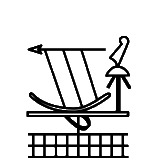
14256
|
14253
|
U+14256 kEH_Desc An spear, arrow without fletching or a harpoon without handle, written horizontally, on top of a crescent moon shape, connected by four lines, in front of a feather (H6), angled forwards on top of a standard with a round top, with outwards angled lines coming from the tip of the pole (R14B); on top of a standard used for carrying religious symbols (R12), written on top of a parcel of land with irrigation ditches (N24).
U+14253 kEH_Desc An spear, arrow without fletching or a harpoon without handle, written horizontally, on top of a crescent moon shape, connected by four lines, with the point towards the back, in front of a feather (H6), Angled forwards on top of a standard with a round top, with outwards angled lines coming from the tip of the pole (R14B), on top of a standard used for carrying religious symbols, with a loop under the horizontal beam, running over the vertical pole.
Is the feather "angled forwards" in the glyph of U+14256? I thought I understood what descriptions generally mean by "angled forwards" (cf. U+14253) but this isn't it.

1425E
|
U+1425E kEH_Desc A long oval net, resembling a loop with vertical lines inside it, with ties at the front which curve outwards and backwards.
"vertical lines"? I rather see curves, not vertical lines. A matter of loose use of words, or rather a glyph that is incorrect? The Database refers to p. 34, l. 14 of:
https://archive.org/details/MMAF25/page/n29/mode/2up
Here there are vertical lines, but the net is not long.
|
1425F
|
U+1425F kEH_Desc A net used for fishing or fowling, without weights.
Should that be "with weights"? What are the circles at the right?

1429D
|

1429C
|
U+1429D kEH_Desc A plough, with a cross-bar and two vertical lines on the long beam, with the long beam curving upwards at the front.
U+1429C kEH_Desc A plough, with a cross-bar and two vertical lines on the long beam, without a circle at the front of the long beam.
"At the front" in the description of U+1429D becomes confusing because the sign is mirrored relative to say U+1429C. (I assume the mirroring is intentional.) Elsewhere in descriptions I have seen use of "left" and "right". I realise the downside of left/right is that strictly speaking this becomes incorrect for right-to-left running text, but the left/right terminology tends to be less ambiguous than front/back when describing signs in the sign list.
Apropos, what I find puzzling in this and many other cases is that only negative views are entered in the Database, here "variation too limited to be of use for Unicode" and "Not a meaningful variant". And yet it became not only a new code point but a core sign?

142AE
|

13349 (5.2)
|
U+142AE kEH_Desc An adze, with an attached blade at the front, in a piece of wood, with the end handle below the wood.
U+13349 kEH_Desc An adze, with an attached blade at the front (U19A), in a piece of wood.
In the Unicode 5.2 code charts (not the Unicode 16 code charts), the handle of U+13349 was already a little below the wood. Either way, distinguishing these two variants on the basis of how many pixels the handle is below the wood is entirely inappropriate for Unicode.
In the Database there is a comment:
"Variation seems meaningless to me. I would not even include it as a class in TSL."
Quite! How this then became a new code point, let alone a core sign, is a mystery to me.
|
142C4
|

142C5
|
U+142C4 kEH_Desc A drill, with a half-circle handle, with a vertical line on top, with a curl towards the front on top of the handle, with a forked drill-bit.
U+142C5 kEH_Desc A drill, with a half-circle handle, with a vertical line on top, with a curl towards the front on top of the handle, with a forked drill-bit, with a horizontal line on top of the forked drill-bit.
I suspect the "horizontal line on top of the forked drill-bit" should have distinguished these two, but it is missing from the glyph of U+142C5. Without this, the signs are identical for all practical purposes.
|
142C9
|
U+142C9 kEH_Desc A drill, with a half-circle handle, with a feather (H6) on top, with a round drill-bit with a horizontal line on top of the circle, with a short vertical stroke next to the drill, connected to the handle.
The glyph shows a forked drill-bit, not a round drill-bit. The horizontal line is not on top of the drill-bit but over it.
|
142CA
|
U+142CA kEH_Desc A drill, with a half-circle handle, with a forward angled stroke on top of the handle, with a forked drill-bit, with a horizontal line on top of the forked drill-bit.
In the glyph, the horizontal line is not on top of the drill-bit but over it.
|
142D0
|
U+142D0 kEH_Desc A drill, with a half-circle handle, with a forwards angled loop and a backwards tick on top of the handle, with a round drill-bit, with a horizontal line above and below the drill-bit.
The glyph has two ticks, not one tick and one loop as in the description. The Database points to p. 119, l. 13 of:
https://www.ifao.egnet.net/uploads/publications/enligne/MMAF020.pdf
This suggests the tick on the right should be redrawn as a small loop, of roughly the same size.

142DB
|
142DC
|
U+142DB kEH_Desc A pestle, inside a square-bottomed mortar.
U+142DC kEH_Desc A pestle with a handle/tick at the front, inside a round-bottomed mortar.
To me, "square" implies 4 corners. If this was meant to contrast U+142DB with say U+142DC, then perhaps replace "square-bottomed" by "flat-bottomed"?
|
142F6
|
U+142F6 kEH_Desc An astronomical instrument to measure the movements of the stars, consisting of a square block coming from a long horizontal base, with a vertical line going over the middle of the square block, decending below the block, with a plummet in the shape of a heart (F34) hanging below the base.
The vertical line is interrupted by the base. That seems inconsistent with the description. Is the glyph incorrect or should the description be amended?
Also, I would replace "coming from" by "on".

142F7
|
1334A (5.2)
|
U+142F7 kEH_Desc An astronomical instrument to measure the movements of the stars, consisting of two vertical ovals at the front of a long horizontal base, with a plummet in the shape of a heart (F34) hanging below the base, connected to a vertical line between the two ovals, with an upwards dot in the middle of the horizontal base.
U+1334A kEH_Desc A chisel with a conical handle and short blade.
Again, is the vertical line in U+142F7 supposed to be interrupted at the base? There isn't actually a vertical line between the two ovals, it looks more like there is whitespace between the two ovals.
U+142F7 has "upwards dot"? I would not describe the shape in the glyph as a dot. It looks more like U22 (U+1334A).
|
142FC
|
U+142FC kEH_Desc The head of a human man, seen in profile, with a short straight beard (D1), on top of a tall potter's wheel.
There is no discernible beard in the glyph. The Database refers to p. 138, l. 8 and pl. DLXVII of:
https://www.ifao.egnet.net/uploads/publications/enligne/Temples-Dendara006.pdf
It would be impossible to see a beard in the coarse font of the inscription and in the blurry photo (at least in the online PDF). Where does the idea come from that there is a beard? There would not have been a problem had undue specificity in the description been avoided.

14322
|
U+14322 kEH_Desc A loop of cord with the ends upwards (V6), combined with a folded piece of cloth (S29).
In Unicode 17 it has been clarified that S29 is mirrored horizontally.

14324
|
U+14324 kEH_Desc An egg (H8), written inside a cartouche in a round form (V9), with three stems of papyrus with a bud (M13) at the front, and three stems of papyrus with a flowering bud (M127) at the back.
In the glyph, there is a stroke under the egg, not mentioned in the description. The Database refers to p. 80, l. 13 and pl. CXCIII of:
https://www.ifao.egnet.net/uploads/publications/enligne/Temples-Dendara003.pdf
In the photo, the shape in fact occurs twice, once as part of running text and once in iconography, and in both cases there is a pronounced stroke under the egg.
From Unicode 17, this has been addressed by adding "stroke shaped like an eyebrow" to the description.

1432F
|

13393 (5.2)
|
U+1432F kEH_Desc A cobra in repose (Naja haja) (I10), written over a hobble for cattle without a crossbar (V20).
U+13393 kEH_Desc A cobra in repose (Naja haja) (I10), written over a hobble for cattle without a crossbar (V20).
In the glyph of U+1432F, it is not "written over" as it is usually interpreted.
Further, the introduction of this code point next to U+13393, or at all, is poorly justified. The Database has:
"Seems to occur when the text is arranged to fit something as if it is a normal I10. If used in this capacity, it needs to be atomic."
The "fit something as if [...]" is too vague. What I understand from the pointer in the Database to:
http://sith.huma-num.fr/karnak/4225
is that the intended use of U+1432F is with insertion in the bottom left corner. But as noted before, the implementation can choose an appropriate form of an overlay depending on whether there are insertions, obviating the need for U+1432F (and of U+13393 for that matter).
Once again, I note that e.g. the flat hare U+130FA and the flat swallow U+1316B, which are typically used with vertical joiners, were deprecated because they "only" served to arrange signs in a better way. And yet the only justification for the introduction of U+1432F is that it serves to arrange signs in a better way. There is no coherent vision behind what was done.
|
143DA
|
U+143DA kEH_Desc A rounded harp, with a female human head, in profile, with a headdress of bovine horns with a sun disk (F102), on the tip.
There appears to be uraeus or head of vulture near headdress. Is that real?
|
143EF
|
U+143EF kEH_Desc rectangular writing tablet with, with a vertical line at either side of the tablet.
Remove "with, ".
{kind=link}